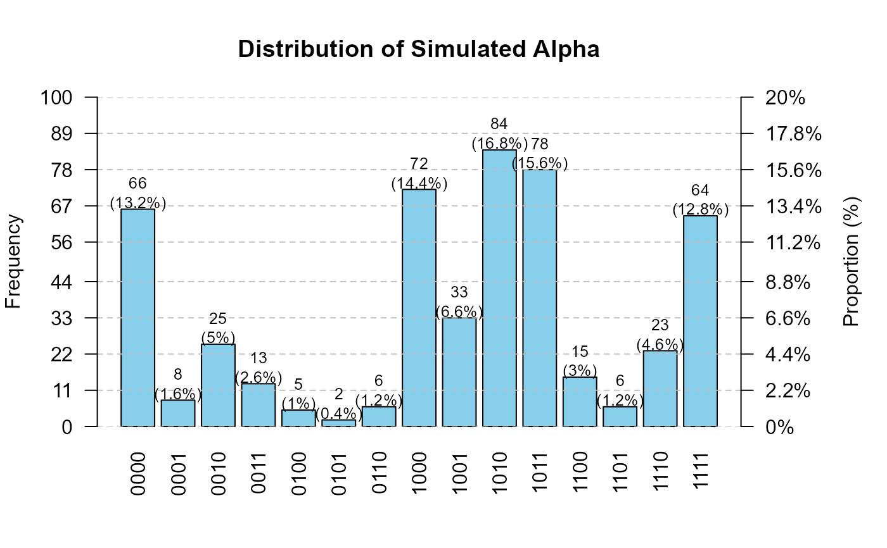
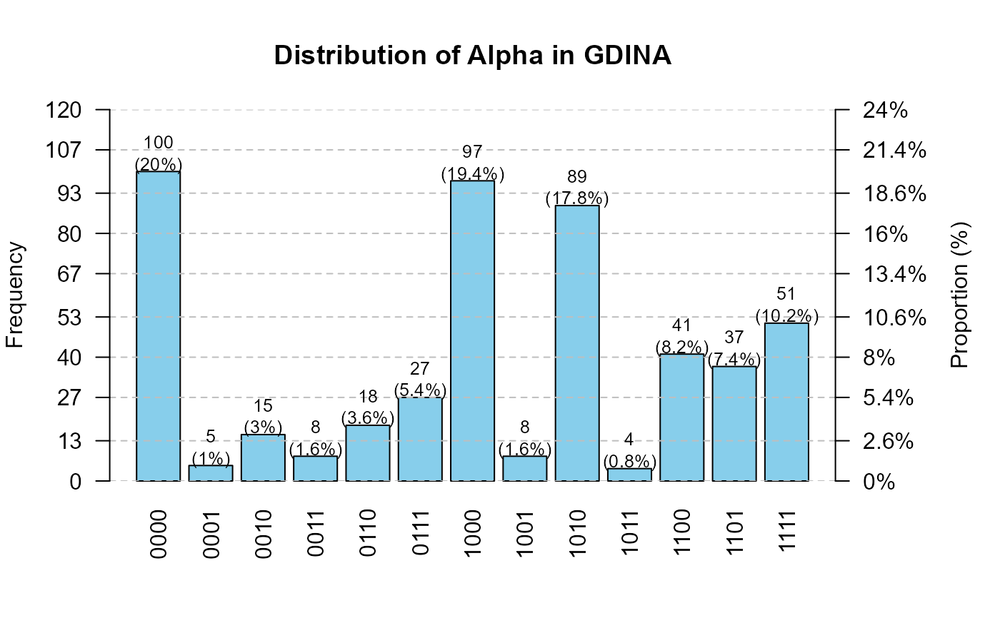
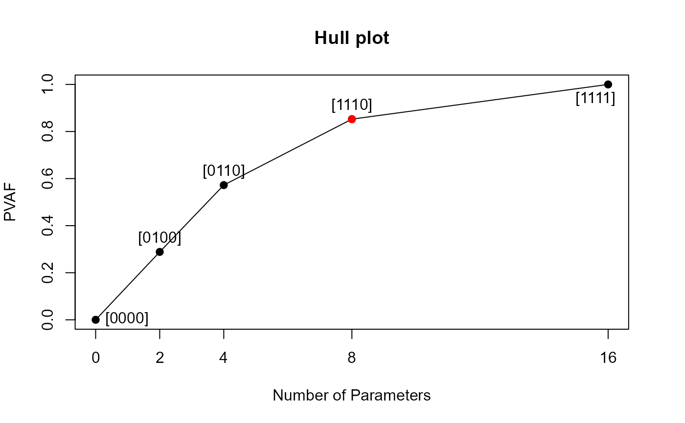
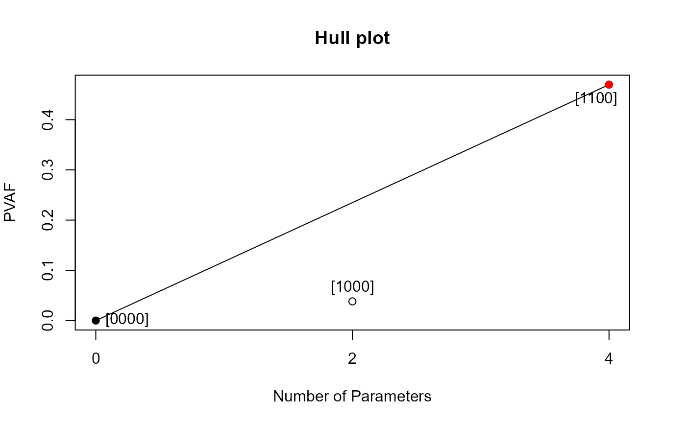

plot.RdGenerate visualizations for objects created by the Qval package. The generic `plot` dispatches to appropriate methods based on object class:
Barplot of attribute-pattern distribution (frequency and proportion).
Barplot of simulated attribute-pattern distribution (frequency and proportion).
Hull plot marking the suggested point in red (method = "Hull").
# S3 method for class 'CDM'
plot(x, ...)
# S3 method for class 'sim.data'
plot(x, ...)
# S3 method for class 'validation'
plot(x, i = 1, ...)An object of class CDM, sim.data, or validation.
Additional arguments (currently unused).
For validation objects, the index of the item for which to plot the Hull curve.
None. Functions are called for side effects (plotting).
plot(CDM): Plot method for CDM objects
plot(sim.data): Plot method for sim.data objects
plot(validation): Hull plot for validation objects
set.seed(123)
library(Qval)
# \donttest{
K <- 4
I <- 20
IQ <- list(
P0 = runif(I, 0.2, 0.4),
P1 = runif(I, 0.6, 0.8)
)
################################################################
# Example 1: sim.data object #
################################################################
Q <- sim.Q(K, I)
data.obj <- sim.data(Q = Q, N = 500, IQ = IQ,
model = "GDINA", distribute = "horder")
#> distribute = horder
#> model = GDINA
#> number of attributes: 4
#> number of items: 20
#> num of examinees: 500
#> average of P0 = 0.31
#> average of P1 = 0.715
#> theta_mean = 0.03 , theta_sd = 0.969
#> a = 1.5 1.5 1.5 1.5
#> b = 1.5 -1.5 0.5 -0.5
plot(data.obj)

################################################################
# Example 2: CDM object #
################################################################
CDM.obj <- CDM(data.obj$dat, Q, model = "GDINA",
method = "EM", maxitr = 2000, verbose = 1)
#>
Iter = 1 Max. abs. change = 0.29997 Deviance = 14639.04
Iter = 2 Max. abs. change = 0.07254 Deviance = 13243.59
Iter = 3 Max. abs. change = 0.05078 Deviance = 13178.25
Iter = 4 Max. abs. change = 0.03971 Deviance = 13155.90
Iter = 5 Max. abs. change = 0.03212 Deviance = 13144.36
Iter = 6 Max. abs. change = 0.02654 Deviance = 13137.31
Iter = 7 Max. abs. change = 0.02329 Deviance = 13132.53
Iter = 8 Max. abs. change = 0.02288 Deviance = 13129.07
Iter = 9 Max. abs. change = 0.02141 Deviance = 13126.43
Iter = 10 Max. abs. change = 0.01935 Deviance = 13124.35
Iter = 11 Max. abs. change = 0.01705 Deviance = 13122.67
Iter = 12 Max. abs. change = 0.01474 Deviance = 13121.30
Iter = 13 Max. abs. change = 0.01256 Deviance = 13120.15
Iter = 14 Max. abs. change = 0.01058 Deviance = 13119.17
Iter = 15 Max. abs. change = 0.00882 Deviance = 13118.33
Iter = 16 Max. abs. change = 0.00748 Deviance = 13117.60
Iter = 17 Max. abs. change = 0.00672 Deviance = 13116.94
Iter = 18 Max. abs. change = 0.00605 Deviance = 13116.36
Iter = 19 Max. abs. change = 0.00572 Deviance = 13115.82
Iter = 20 Max. abs. change = 0.00545 Deviance = 13115.33
Iter = 21 Max. abs. change = 0.00534 Deviance = 13114.86
Iter = 22 Max. abs. change = 0.00530 Deviance = 13114.42
Iter = 23 Max. abs. change = 0.00528 Deviance = 13114.00
Iter = 24 Max. abs. change = 0.00549 Deviance = 13113.59
Iter = 25 Max. abs. change = 0.00602 Deviance = 13113.18
Iter = 26 Max. abs. change = 0.00654 Deviance = 13112.77
Iter = 27 Max. abs. change = 0.00705 Deviance = 13112.36
Iter = 28 Max. abs. change = 0.00753 Deviance = 13111.93
Iter = 29 Max. abs. change = 0.00798 Deviance = 13111.49
Iter = 30 Max. abs. change = 0.00837 Deviance = 13111.04
Iter = 31 Max. abs. change = 0.00869 Deviance = 13110.57
Iter = 32 Max. abs. change = 0.00892 Deviance = 13110.07
Iter = 33 Max. abs. change = 0.00905 Deviance = 13109.56
Iter = 34 Max. abs. change = 0.00907 Deviance = 13109.02
Iter = 35 Max. abs. change = 0.00898 Deviance = 13108.47
Iter = 36 Max. abs. change = 0.00898 Deviance = 13107.91
Iter = 37 Max. abs. change = 0.00949 Deviance = 13107.34
Iter = 38 Max. abs. change = 0.00994 Deviance = 13106.76
Iter = 39 Max. abs. change = 0.01032 Deviance = 13106.18
Iter = 40 Max. abs. change = 0.01060 Deviance = 13105.62
Iter = 41 Max. abs. change = 0.01076 Deviance = 13105.06
Iter = 42 Max. abs. change = 0.01156 Deviance = 13104.52
Iter = 43 Max. abs. change = 0.01237 Deviance = 13103.99
Iter = 44 Max. abs. change = 0.01311 Deviance = 13103.49
Iter = 45 Max. abs. change = 0.01375 Deviance = 13103.02
Iter = 46 Max. abs. change = 0.01428 Deviance = 13102.57
Iter = 47 Max. abs. change = 0.01468 Deviance = 13102.15
Iter = 48 Max. abs. change = 0.01496 Deviance = 13101.75
Iter = 49 Max. abs. change = 0.01510 Deviance = 13101.39
Iter = 50 Max. abs. change = 0.01511 Deviance = 13101.05
Iter = 51 Max. abs. change = 0.01500 Deviance = 13100.74
Iter = 52 Max. abs. change = 0.01477 Deviance = 13100.45
Iter = 53 Max. abs. change = 0.01444 Deviance = 13100.19
Iter = 54 Max. abs. change = 0.01402 Deviance = 13099.95
Iter = 55 Max. abs. change = 0.01352 Deviance = 13099.74
Iter = 56 Max. abs. change = 0.01297 Deviance = 13099.54
Iter = 57 Max. abs. change = 0.01237 Deviance = 13099.35
Iter = 58 Max. abs. change = 0.01173 Deviance = 13099.18
Iter = 59 Max. abs. change = 0.01108 Deviance = 13099.02
Iter = 60 Max. abs. change = 0.01041 Deviance = 13098.88
Iter = 61 Max. abs. change = 0.00974 Deviance = 13098.73
Iter = 62 Max. abs. change = 0.00908 Deviance = 13098.60
Iter = 63 Max. abs. change = 0.00844 Deviance = 13098.47
Iter = 64 Max. abs. change = 0.00781 Deviance = 13098.34
Iter = 65 Max. abs. change = 0.00721 Deviance = 13098.22
Iter = 66 Max. abs. change = 0.00664 Deviance = 13098.10
Iter = 67 Max. abs. change = 0.00610 Deviance = 13097.98
Iter = 68 Max. abs. change = 0.00559 Deviance = 13097.86
Iter = 69 Max. abs. change = 0.00526 Deviance = 13097.74
Iter = 70 Max. abs. change = 0.00535 Deviance = 13097.63
Iter = 71 Max. abs. change = 0.00542 Deviance = 13097.51
Iter = 72 Max. abs. change = 0.00548 Deviance = 13097.39
Iter = 73 Max. abs. change = 0.00552 Deviance = 13097.27
Iter = 74 Max. abs. change = 0.00554 Deviance = 13097.16
Iter = 75 Max. abs. change = 0.00554 Deviance = 13097.04
Iter = 76 Max. abs. change = 0.00552 Deviance = 13096.92
Iter = 77 Max. abs. change = 0.00547 Deviance = 13096.81
Iter = 78 Max. abs. change = 0.00541 Deviance = 13096.69
Iter = 79 Max. abs. change = 0.00533 Deviance = 13096.58
Iter = 80 Max. abs. change = 0.00522 Deviance = 13096.48
Iter = 81 Max. abs. change = 0.00510 Deviance = 13096.37
Iter = 82 Max. abs. change = 0.00495 Deviance = 13096.27
Iter = 83 Max. abs. change = 0.00480 Deviance = 13096.18
Iter = 84 Max. abs. change = 0.00463 Deviance = 13096.09
Iter = 85 Max. abs. change = 0.00445 Deviance = 13096.01
Iter = 86 Max. abs. change = 0.00426 Deviance = 13095.93
Iter = 87 Max. abs. change = 0.00407 Deviance = 13095.86
Iter = 88 Max. abs. change = 0.00388 Deviance = 13095.79
Iter = 89 Max. abs. change = 0.00369 Deviance = 13095.73
Iter = 90 Max. abs. change = 0.00350 Deviance = 13095.67
Iter = 91 Max. abs. change = 0.00331 Deviance = 13095.62
Iter = 92 Max. abs. change = 0.00313 Deviance = 13095.57
Iter = 93 Max. abs. change = 0.00295 Deviance = 13095.53
Iter = 94 Max. abs. change = 0.00279 Deviance = 13095.49
Iter = 95 Max. abs. change = 0.00262 Deviance = 13095.45
Iter = 96 Max. abs. change = 0.00247 Deviance = 13095.42
Iter = 97 Max. abs. change = 0.00233 Deviance = 13095.39
Iter = 98 Max. abs. change = 0.00219 Deviance = 13095.37
Iter = 99 Max. abs. change = 0.00206 Deviance = 13095.34
Iter = 100 Max. abs. change = 0.00194 Deviance = 13095.32
Iter = 101 Max. abs. change = 0.00182 Deviance = 13095.30
Iter = 102 Max. abs. change = 0.00172 Deviance = 13095.29
Iter = 103 Max. abs. change = 0.00162 Deviance = 13095.27
Iter = 104 Max. abs. change = 0.00152 Deviance = 13095.25
Iter = 105 Max. abs. change = 0.00143 Deviance = 13095.24
Iter = 106 Max. abs. change = 0.00141 Deviance = 13095.23
Iter = 107 Max. abs. change = 0.00139 Deviance = 13095.21
Iter = 108 Max. abs. change = 0.00138 Deviance = 13095.20
Iter = 109 Max. abs. change = 0.00136 Deviance = 13095.19
Iter = 110 Max. abs. change = 0.00133 Deviance = 13095.18
Iter = 111 Max. abs. change = 0.00131 Deviance = 13095.17
Iter = 112 Max. abs. change = 0.00129 Deviance = 13095.16
Iter = 113 Max. abs. change = 0.00127 Deviance = 13095.15
Iter = 114 Max. abs. change = 0.00124 Deviance = 13095.15
Iter = 115 Max. abs. change = 0.00122 Deviance = 13095.14
Iter = 116 Max. abs. change = 0.00119 Deviance = 13095.13
Iter = 117 Max. abs. change = 0.00117 Deviance = 13095.12
Iter = 118 Max. abs. change = 0.00115 Deviance = 13095.12
Iter = 119 Max. abs. change = 0.00112 Deviance = 13095.11
Iter = 120 Max. abs. change = 0.00110 Deviance = 13095.11
Iter = 121 Max. abs. change = 0.00107 Deviance = 13095.10
Iter = 122 Max. abs. change = 0.00105 Deviance = 13095.09
Iter = 123 Max. abs. change = 0.00102 Deviance = 13095.09
Iter = 124 Max. abs. change = 0.00100 Deviance = 13095.08
Iter = 125 Max. abs. change = 0.00098 Deviance = 13095.08
Iter = 126 Max. abs. change = 0.00096 Deviance = 13095.07
Iter = 127 Max. abs. change = 0.00096 Deviance = 13095.07
Iter = 128 Max. abs. change = 0.50752 Deviance = 13095.06
Iter = 129 Max. abs. change = 0.26325 Deviance = 13095.06
Iter = 130 Max. abs. change = 0.12936 Deviance = 13095.05
Iter = 131 Max. abs. change = 0.05883 Deviance = 13095.05
Iter = 132 Max. abs. change = 0.02440 Deviance = 13095.05
Iter = 133 Max. abs. change = 0.00913 Deviance = 13095.04
Iter = 134 Max. abs. change = 0.00306 Deviance = 13095.04
Iter = 135 Max. abs. change = 0.00092 Deviance = 13095.03
Iter = 136 Max. abs. change = 0.00092 Deviance = 13095.03
Iter = 137 Max. abs. change = 0.00092 Deviance = 13095.03
Iter = 138 Max. abs. change = 0.00091 Deviance = 13095.02
Iter = 139 Max. abs. change = 0.00091 Deviance = 13095.02
Iter = 140 Max. abs. change = 0.00090 Deviance = 13095.02
Iter = 141 Max. abs. change = 0.00090 Deviance = 13095.01
Iter = 142 Max. abs. change = 0.00090 Deviance = 13095.01
Iter = 143 Max. abs. change = 0.00089 Deviance = 13095.01
Iter = 144 Max. abs. change = 0.00089 Deviance = 13095.00
Iter = 145 Max. abs. change = 0.00089 Deviance = 13095.00
Iter = 146 Max. abs. change = 0.00088 Deviance = 13095.00
Iter = 147 Max. abs. change = 0.00088 Deviance = 13094.99
Iter = 148 Max. abs. change = 0.00087 Deviance = 13094.99
Iter = 149 Max. abs. change = 0.00087 Deviance = 13094.99
Iter = 150 Max. abs. change = 0.00087 Deviance = 13094.99
Iter = 151 Max. abs. change = 0.00086 Deviance = 13094.98
Iter = 152 Max. abs. change = 0.00086 Deviance = 13094.98
Iter = 153 Max. abs. change = 0.00086 Deviance = 13094.98
Iter = 154 Max. abs. change = 0.00085 Deviance = 13094.98
Iter = 155 Max. abs. change = 0.00085 Deviance = 13094.97
Iter = 156 Max. abs. change = 0.00085 Deviance = 13094.97
Iter = 157 Max. abs. change = 0.00084 Deviance = 13094.97
Iter = 158 Max. abs. change = 0.00084 Deviance = 13094.97
Iter = 159 Max. abs. change = 0.00083 Deviance = 13094.96
Iter = 160 Max. abs. change = 0.00083 Deviance = 13094.96
Iter = 161 Max. abs. change = 0.00083 Deviance = 13094.96
Iter = 162 Max. abs. change = 0.00082 Deviance = 13094.96
Iter = 163 Max. abs. change = 0.00082 Deviance = 13094.96
Iter = 164 Max. abs. change = 0.00082 Deviance = 13094.95
Iter = 165 Max. abs. change = 0.00081 Deviance = 13094.95
Iter = 166 Max. abs. change = 0.00081 Deviance = 13094.95
Iter = 167 Max. abs. change = 0.00080 Deviance = 13094.95
Iter = 168 Max. abs. change = 0.00080 Deviance = 13094.95
Iter = 169 Max. abs. change = 0.00080 Deviance = 13094.94
Iter = 170 Max. abs. change = 0.00079 Deviance = 13094.94
Iter = 171 Max. abs. change = 0.00079 Deviance = 13094.94
Iter = 172 Max. abs. change = 0.00079 Deviance = 13094.94
Iter = 173 Max. abs. change = 0.00078 Deviance = 13094.94
Iter = 174 Max. abs. change = 0.00078 Deviance = 13094.94
Iter = 175 Max. abs. change = 0.00078 Deviance = 13094.93
Iter = 176 Max. abs. change = 0.00077 Deviance = 13094.93
Iter = 177 Max. abs. change = 0.00077 Deviance = 13094.93
Iter = 178 Max. abs. change = 0.00076 Deviance = 13094.93
Iter = 179 Max. abs. change = 0.00076 Deviance = 13094.93
Iter = 180 Max. abs. change = 0.00076 Deviance = 13094.93
Iter = 181 Max. abs. change = 0.00075 Deviance = 13094.92
Iter = 182 Max. abs. change = 0.00075 Deviance = 13094.92
Iter = 183 Max. abs. change = 0.00075 Deviance = 13094.92
Iter = 184 Max. abs. change = 0.00074 Deviance = 13094.92
Iter = 185 Max. abs. change = 0.00074 Deviance = 13094.92
Iter = 186 Max. abs. change = 0.00073 Deviance = 13094.92
Iter = 187 Max. abs. change = 0.00073 Deviance = 13094.92
Iter = 188 Max. abs. change = 0.00073 Deviance = 13094.91
Iter = 189 Max. abs. change = 0.00072 Deviance = 13094.91
Iter = 190 Max. abs. change = 0.00072 Deviance = 13094.91
Iter = 191 Max. abs. change = 0.00072 Deviance = 13094.91
Iter = 192 Max. abs. change = 0.00071 Deviance = 13094.91
Iter = 193 Max. abs. change = 0.00071 Deviance = 13094.91
Iter = 194 Max. abs. change = 0.00071 Deviance = 13094.91
Iter = 195 Max. abs. change = 0.00070 Deviance = 13094.91
Iter = 196 Max. abs. change = 0.00070 Deviance = 13094.90
Iter = 197 Max. abs. change = 0.00069 Deviance = 13094.90
Iter = 198 Max. abs. change = 0.00069 Deviance = 13094.90
Iter = 199 Max. abs. change = 0.00069 Deviance = 13094.90
Iter = 200 Max. abs. change = 0.00068 Deviance = 13094.90
Iter = 201 Max. abs. change = 0.00068 Deviance = 13094.90
Iter = 202 Max. abs. change = 0.00068 Deviance = 13094.90
Iter = 203 Max. abs. change = 0.00067 Deviance = 13094.90
Iter = 204 Max. abs. change = 0.00067 Deviance = 13094.90
Iter = 205 Max. abs. change = 0.00067 Deviance = 13094.89
Iter = 206 Max. abs. change = 0.00066 Deviance = 13094.89
Iter = 207 Max. abs. change = 0.00066 Deviance = 13094.89
Iter = 208 Max. abs. change = 0.00065 Deviance = 13094.89
Iter = 209 Max. abs. change = 0.00065 Deviance = 13094.89
Iter = 210 Max. abs. change = 0.00065 Deviance = 13094.89
Iter = 211 Max. abs. change = 0.00064 Deviance = 13094.89
Iter = 212 Max. abs. change = 0.00064 Deviance = 13094.89
Iter = 213 Max. abs. change = 0.00064 Deviance = 13094.89
Iter = 214 Max. abs. change = 0.00063 Deviance = 13094.89
Iter = 215 Max. abs. change = 0.00063 Deviance = 13094.88
Iter = 216 Max. abs. change = 0.00063 Deviance = 13094.88
Iter = 217 Max. abs. change = 0.00062 Deviance = 13094.88
Iter = 218 Max. abs. change = 0.00062 Deviance = 13094.88
Iter = 219 Max. abs. change = 0.00062 Deviance = 13094.88
Iter = 220 Max. abs. change = 0.00061 Deviance = 13094.88
Iter = 221 Max. abs. change = 0.00061 Deviance = 13094.88
Iter = 222 Max. abs. change = 0.00060 Deviance = 13094.88
Iter = 223 Max. abs. change = 0.00060 Deviance = 13094.88
Iter = 224 Max. abs. change = 0.00060 Deviance = 13094.88
Iter = 225 Max. abs. change = 0.00059 Deviance = 13094.88
Iter = 226 Max. abs. change = 0.00059 Deviance = 13094.88
Iter = 227 Max. abs. change = 0.00059 Deviance = 13094.87
Iter = 228 Max. abs. change = 0.00058 Deviance = 13094.87
Iter = 229 Max. abs. change = 0.00058 Deviance = 13094.87
Iter = 230 Max. abs. change = 0.00058 Deviance = 13094.87
Iter = 231 Max. abs. change = 0.00057 Deviance = 13094.87
Iter = 232 Max. abs. change = 0.00057 Deviance = 13094.87
Iter = 233 Max. abs. change = 0.00057 Deviance = 13094.87
Iter = 234 Max. abs. change = 0.00056 Deviance = 13094.87
Iter = 235 Max. abs. change = 0.00056 Deviance = 13094.87
Iter = 236 Max. abs. change = 0.00056 Deviance = 13094.87
Iter = 237 Max. abs. change = 0.00055 Deviance = 13094.87
Iter = 238 Max. abs. change = 0.00055 Deviance = 13094.87
Iter = 239 Max. abs. change = 0.00055 Deviance = 13094.87
Iter = 240 Max. abs. change = 0.00054 Deviance = 13094.87
Iter = 241 Max. abs. change = 0.00054 Deviance = 13094.87
Iter = 242 Max. abs. change = 0.00054 Deviance = 13094.86
Iter = 243 Max. abs. change = 0.00054 Deviance = 13094.86
Iter = 244 Max. abs. change = 0.00053 Deviance = 13094.86
Iter = 245 Max. abs. change = 0.00053 Deviance = 13094.86
Iter = 246 Max. abs. change = 0.00053 Deviance = 13094.86
Iter = 247 Max. abs. change = 0.00052 Deviance = 13094.86
Iter = 248 Max. abs. change = 0.00052 Deviance = 13094.86
Iter = 249 Max. abs. change = 0.00052 Deviance = 13094.86
Iter = 250 Max. abs. change = 0.00051 Deviance = 13094.86
Iter = 251 Max. abs. change = 0.00051 Deviance = 13094.86
Iter = 252 Max. abs. change = 0.00051 Deviance = 13094.86
Iter = 253 Max. abs. change = 0.00050 Deviance = 13094.86
Iter = 254 Max. abs. change = 0.00050 Deviance = 13094.86
Iter = 255 Max. abs. change = 0.00050 Deviance = 13094.86
Iter = 256 Max. abs. change = 0.00049 Deviance = 13094.86
Iter = 257 Max. abs. change = 0.00049 Deviance = 13094.86
Iter = 258 Max. abs. change = 0.00049 Deviance = 13094.86
Iter = 259 Max. abs. change = 0.00049 Deviance = 13094.86
Iter = 260 Max. abs. change = 0.00048 Deviance = 13094.85
Iter = 261 Max. abs. change = 0.00048 Deviance = 13094.85
Iter = 262 Max. abs. change = 0.00048 Deviance = 13094.85
Iter = 263 Max. abs. change = 0.00047 Deviance = 13094.85
Iter = 264 Max. abs. change = 0.00047 Deviance = 13094.85
Iter = 265 Max. abs. change = 0.00047 Deviance = 13094.85
Iter = 266 Max. abs. change = 0.00047 Deviance = 13094.85
Iter = 267 Max. abs. change = 0.00046 Deviance = 13094.85
Iter = 268 Max. abs. change = 0.00046 Deviance = 13094.85
Iter = 269 Max. abs. change = 0.00046 Deviance = 13094.85
Iter = 270 Max. abs. change = 0.00046 Deviance = 13094.85
Iter = 271 Max. abs. change = 0.00045 Deviance = 13094.85
Iter = 272 Max. abs. change = 0.00045 Deviance = 13094.85
Iter = 273 Max. abs. change = 0.00045 Deviance = 13094.85
Iter = 274 Max. abs. change = 0.00045 Deviance = 13094.85
Iter = 275 Max. abs. change = 0.00044 Deviance = 13094.85
Iter = 276 Max. abs. change = 0.00044 Deviance = 13094.85
Iter = 277 Max. abs. change = 0.00044 Deviance = 13094.85
Iter = 278 Max. abs. change = 0.00044 Deviance = 13094.85
Iter = 279 Max. abs. change = 0.00043 Deviance = 13094.85
Iter = 280 Max. abs. change = 0.00043 Deviance = 13094.85
Iter = 281 Max. abs. change = 0.00043 Deviance = 13094.84
Iter = 282 Max. abs. change = 0.00043 Deviance = 13094.84
Iter = 283 Max. abs. change = 0.00042 Deviance = 13094.84
Iter = 284 Max. abs. change = 0.00042 Deviance = 13094.84
Iter = 285 Max. abs. change = 0.00042 Deviance = 13094.84
Iter = 286 Max. abs. change = 0.00043 Deviance = 13094.84
Iter = 287 Max. abs. change = 0.00043 Deviance = 13094.84
Iter = 288 Max. abs. change = 0.00043 Deviance = 13094.84
Iter = 289 Max. abs. change = 0.00043 Deviance = 13094.84
Iter = 290 Max. abs. change = 0.00043 Deviance = 13094.84
Iter = 291 Max. abs. change = 0.00043 Deviance = 13094.84
Iter = 292 Max. abs. change = 0.00043 Deviance = 13094.84
Iter = 293 Max. abs. change = 0.00043 Deviance = 13094.84
Iter = 294 Max. abs. change = 0.00043 Deviance = 13094.84
Iter = 295 Max. abs. change = 0.00043 Deviance = 13094.84
Iter = 296 Max. abs. change = 0.00044 Deviance = 13094.84
Iter = 297 Max. abs. change = 0.00044 Deviance = 13094.84
Iter = 298 Max. abs. change = 0.00044 Deviance = 13094.84
Iter = 299 Max. abs. change = 0.00044 Deviance = 13094.84
Iter = 300 Max. abs. change = 0.00044 Deviance = 13094.84
Iter = 301 Max. abs. change = 0.00044 Deviance = 13094.84
Iter = 302 Max. abs. change = 0.00044 Deviance = 13094.84
Iter = 303 Max. abs. change = 0.00044 Deviance = 13094.84
Iter = 304 Max. abs. change = 0.00044 Deviance = 13094.84
Iter = 305 Max. abs. change = 0.00044 Deviance = 13094.83
Iter = 306 Max. abs. change = 0.00044 Deviance = 13094.83
Iter = 307 Max. abs. change = 0.00044 Deviance = 13094.83
Iter = 308 Max. abs. change = 0.00045 Deviance = 13094.83
Iter = 309 Max. abs. change = 0.00045 Deviance = 13094.83
Iter = 310 Max. abs. change = 0.00045 Deviance = 13094.83
Iter = 311 Max. abs. change = 0.00045 Deviance = 13094.83
Iter = 312 Max. abs. change = 0.00045 Deviance = 13094.83
Iter = 313 Max. abs. change = 0.00045 Deviance = 13094.83
Iter = 314 Max. abs. change = 0.00045 Deviance = 13094.83
Iter = 315 Max. abs. change = 0.00045 Deviance = 13094.83
Iter = 316 Max. abs. change = 0.00045 Deviance = 13094.83
Iter = 317 Max. abs. change = 0.00045 Deviance = 13094.83
Iter = 318 Max. abs. change = 0.00045 Deviance = 13094.83
Iter = 319 Max. abs. change = 0.00045 Deviance = 13094.83
Iter = 320 Max. abs. change = 0.00045 Deviance = 13094.83
Iter = 321 Max. abs. change = 0.00045 Deviance = 13094.83
Iter = 322 Max. abs. change = 0.00045 Deviance = 13094.83
Iter = 323 Max. abs. change = 0.00045 Deviance = 13094.83
Iter = 324 Max. abs. change = 0.00045 Deviance = 13094.83
Iter = 325 Max. abs. change = 0.00045 Deviance = 13094.83
Iter = 326 Max. abs. change = 0.00045 Deviance = 13094.83
Iter = 327 Max. abs. change = 0.00045 Deviance = 13094.83
Iter = 328 Max. abs. change = 0.00044 Deviance = 13094.83
Iter = 329 Max. abs. change = 0.00044 Deviance = 13094.83
Iter = 330 Max. abs. change = 0.00044 Deviance = 13094.82
Iter = 331 Max. abs. change = 0.00044 Deviance = 13094.82
Iter = 332 Max. abs. change = 0.00044 Deviance = 13094.82
Iter = 333 Max. abs. change = 0.00044 Deviance = 13094.82
Iter = 334 Max. abs. change = 0.00044 Deviance = 13094.82
Iter = 335 Max. abs. change = 0.00044 Deviance = 13094.82
Iter = 336 Max. abs. change = 0.00044 Deviance = 13094.82
Iter = 337 Max. abs. change = 0.00043 Deviance = 13094.82
Iter = 338 Max. abs. change = 0.00043 Deviance = 13094.82
Iter = 339 Max. abs. change = 0.00043 Deviance = 13094.82
Iter = 340 Max. abs. change = 0.00043 Deviance = 13094.82
Iter = 341 Max. abs. change = 0.00043 Deviance = 13094.82
Iter = 342 Max. abs. change = 0.00043 Deviance = 13094.82
Iter = 343 Max. abs. change = 0.00042 Deviance = 13094.82
Iter = 344 Max. abs. change = 0.00042 Deviance = 13094.82
Iter = 345 Max. abs. change = 0.00042 Deviance = 13094.82
Iter = 346 Max. abs. change = 0.00042 Deviance = 13094.82
Iter = 347 Max. abs. change = 0.00041 Deviance = 13094.82
Iter = 348 Max. abs. change = 0.00041 Deviance = 13094.82
Iter = 349 Max. abs. change = 0.00041 Deviance = 13094.82
Iter = 350 Max. abs. change = 0.00041 Deviance = 13094.82
Iter = 351 Max. abs. change = 0.00040 Deviance = 13094.82
Iter = 352 Max. abs. change = 0.00040 Deviance = 13094.82
Iter = 353 Max. abs. change = 0.00040 Deviance = 13094.82
Iter = 354 Max. abs. change = 0.00039 Deviance = 13094.82
Iter = 355 Max. abs. change = 0.00039 Deviance = 13094.81
Iter = 356 Max. abs. change = 0.00039 Deviance = 13094.81
Iter = 357 Max. abs. change = 0.00039 Deviance = 13094.81
Iter = 358 Max. abs. change = 0.00039 Deviance = 13094.81
Iter = 359 Max. abs. change = 0.00039 Deviance = 13094.81
Iter = 360 Max. abs. change = 0.00039 Deviance = 13094.81
Iter = 361 Max. abs. change = 0.00038 Deviance = 13094.81
Iter = 362 Max. abs. change = 0.00038 Deviance = 13094.81
Iter = 363 Max. abs. change = 0.00038 Deviance = 13094.81
Iter = 364 Max. abs. change = 0.00038 Deviance = 13094.81
Iter = 365 Max. abs. change = 0.00038 Deviance = 13094.81
Iter = 366 Max. abs. change = 0.00038 Deviance = 13094.81
Iter = 367 Max. abs. change = 0.00038 Deviance = 13094.81
Iter = 368 Max. abs. change = 0.00037 Deviance = 13094.81
Iter = 369 Max. abs. change = 0.00037 Deviance = 13094.81
Iter = 370 Max. abs. change = 0.00037 Deviance = 13094.81
Iter = 371 Max. abs. change = 0.00037 Deviance = 13094.81
Iter = 372 Max. abs. change = 0.00037 Deviance = 13094.81
Iter = 373 Max. abs. change = 0.00036 Deviance = 13094.81
Iter = 374 Max. abs. change = 0.00036 Deviance = 13094.81
Iter = 375 Max. abs. change = 0.00036 Deviance = 13094.81
Iter = 376 Max. abs. change = 0.00036 Deviance = 13094.81
Iter = 377 Max. abs. change = 0.00035 Deviance = 13094.81
Iter = 378 Max. abs. change = 0.00035 Deviance = 13094.81
Iter = 379 Max. abs. change = 0.00035 Deviance = 13094.81
Iter = 380 Max. abs. change = 0.00035 Deviance = 13094.81
Iter = 381 Max. abs. change = 0.00034 Deviance = 13094.81
Iter = 382 Max. abs. change = 0.00034 Deviance = 13094.80
Iter = 383 Max. abs. change = 0.00034 Deviance = 13094.80
Iter = 384 Max. abs. change = 0.00033 Deviance = 13094.80
Iter = 385 Max. abs. change = 0.00033 Deviance = 13094.80
Iter = 386 Max. abs. change = 0.00033 Deviance = 13094.80
Iter = 387 Max. abs. change = 0.00032 Deviance = 13094.80
Iter = 388 Max. abs. change = 0.00032 Deviance = 13094.80
Iter = 389 Max. abs. change = 0.00032 Deviance = 13094.80
Iter = 390 Max. abs. change = 0.00031 Deviance = 13094.80
Iter = 391 Max. abs. change = 0.00031 Deviance = 13094.80
Iter = 392 Max. abs. change = 0.00031 Deviance = 13094.80
Iter = 393 Max. abs. change = 0.00030 Deviance = 13094.80
Iter = 394 Max. abs. change = 0.00030 Deviance = 13094.80
Iter = 395 Max. abs. change = 0.00030 Deviance = 13094.80
Iter = 396 Max. abs. change = 0.00029 Deviance = 13094.80
Iter = 397 Max. abs. change = 0.00029 Deviance = 13094.80
Iter = 398 Max. abs. change = 0.00029 Deviance = 13094.80
Iter = 399 Max. abs. change = 0.00028 Deviance = 13094.80
Iter = 400 Max. abs. change = 0.00028 Deviance = 13094.80
Iter = 401 Max. abs. change = 0.00028 Deviance = 13094.80
Iter = 402 Max. abs. change = 0.00027 Deviance = 13094.80
Iter = 403 Max. abs. change = 0.00027 Deviance = 13094.80
Iter = 404 Max. abs. change = 0.00027 Deviance = 13094.80
Iter = 405 Max. abs. change = 0.00026 Deviance = 13094.80
Iter = 406 Max. abs. change = 0.00026 Deviance = 13094.80
Iter = 407 Max. abs. change = 0.00026 Deviance = 13094.80
Iter = 408 Max. abs. change = 0.00025 Deviance = 13094.80
Iter = 409 Max. abs. change = 0.00025 Deviance = 13094.80
Iter = 410 Max. abs. change = 0.00024 Deviance = 13094.80
Iter = 411 Max. abs. change = 0.00024 Deviance = 13094.80
Iter = 412 Max. abs. change = 0.00024 Deviance = 13094.80
Iter = 413 Max. abs. change = 0.00024 Deviance = 13094.80
Iter = 414 Max. abs. change = 0.00024 Deviance = 13094.80
Iter = 415 Max. abs. change = 0.00024 Deviance = 13094.80
Iter = 416 Max. abs. change = 0.00024 Deviance = 13094.80
Iter = 417 Max. abs. change = 0.00024 Deviance = 13094.80
Iter = 418 Max. abs. change = 0.00023 Deviance = 13094.79
Iter = 419 Max. abs. change = 0.00023 Deviance = 13094.79
Iter = 420 Max. abs. change = 0.00023 Deviance = 13094.79
Iter = 421 Max. abs. change = 0.00023 Deviance = 13094.79
Iter = 422 Max. abs. change = 0.00023 Deviance = 13094.79
Iter = 423 Max. abs. change = 0.00023 Deviance = 13094.79
Iter = 424 Max. abs. change = 0.00023 Deviance = 13094.79
Iter = 425 Max. abs. change = 0.00022 Deviance = 13094.79
Iter = 426 Max. abs. change = 0.00022 Deviance = 13094.79
Iter = 427 Max. abs. change = 0.00022 Deviance = 13094.79
Iter = 428 Max. abs. change = 0.00022 Deviance = 13094.79
Iter = 429 Max. abs. change = 0.00022 Deviance = 13094.79
Iter = 430 Max. abs. change = 0.00022 Deviance = 13094.79
Iter = 431 Max. abs. change = 0.00022 Deviance = 13094.79
Iter = 432 Max. abs. change = 0.00022 Deviance = 13094.79
Iter = 433 Max. abs. change = 0.00021 Deviance = 13094.79
Iter = 434 Max. abs. change = 0.00021 Deviance = 13094.79
Iter = 435 Max. abs. change = 0.00021 Deviance = 13094.79
Iter = 436 Max. abs. change = 0.00021 Deviance = 13094.79
Iter = 437 Max. abs. change = 0.00021 Deviance = 13094.79
Iter = 438 Max. abs. change = 0.00021 Deviance = 13094.79
Iter = 439 Max. abs. change = 0.00021 Deviance = 13094.79
Iter = 440 Max. abs. change = 0.00021 Deviance = 13094.79
Iter = 441 Max. abs. change = 0.00021 Deviance = 13094.79
Iter = 442 Max. abs. change = 0.00021 Deviance = 13094.79
Iter = 443 Max. abs. change = 0.00021 Deviance = 13094.79
Iter = 444 Max. abs. change = 0.00020 Deviance = 13094.79
Iter = 445 Max. abs. change = 0.00020 Deviance = 13094.79
Iter = 446 Max. abs. change = 0.00020 Deviance = 13094.79
Iter = 447 Max. abs. change = 0.00020 Deviance = 13094.79
Iter = 448 Max. abs. change = 0.00020 Deviance = 13094.79
Iter = 449 Max. abs. change = 0.00020 Deviance = 13094.79
Iter = 450 Max. abs. change = 0.00020 Deviance = 13094.79
Iter = 451 Max. abs. change = 0.00020 Deviance = 13094.79
Iter = 452 Max. abs. change = 0.00020 Deviance = 13094.79
Iter = 453 Max. abs. change = 0.00020 Deviance = 13094.79
Iter = 454 Max. abs. change = 0.00020 Deviance = 13094.79
Iter = 455 Max. abs. change = 0.00020 Deviance = 13094.79
Iter = 456 Max. abs. change = 0.00019 Deviance = 13094.79
Iter = 457 Max. abs. change = 0.00019 Deviance = 13094.79
Iter = 458 Max. abs. change = 0.00019 Deviance = 13094.79
Iter = 459 Max. abs. change = 0.00019 Deviance = 13094.79
Iter = 460 Max. abs. change = 0.00019 Deviance = 13094.79
Iter = 461 Max. abs. change = 0.00019 Deviance = 13094.79
Iter = 462 Max. abs. change = 0.00019 Deviance = 13094.79
Iter = 463 Max. abs. change = 0.00019 Deviance = 13094.79
Iter = 464 Max. abs. change = 0.00019 Deviance = 13094.79
Iter = 465 Max. abs. change = 0.00019 Deviance = 13094.79
Iter = 466 Max. abs. change = 0.00019 Deviance = 13094.79
Iter = 467 Max. abs. change = 0.00019 Deviance = 13094.79
Iter = 468 Max. abs. change = 0.00018 Deviance = 13094.79
Iter = 469 Max. abs. change = 0.00018 Deviance = 13094.79
Iter = 470 Max. abs. change = 0.00018 Deviance = 13094.79
Iter = 471 Max. abs. change = 0.00018 Deviance = 13094.79
Iter = 472 Max. abs. change = 0.00018 Deviance = 13094.79
Iter = 473 Max. abs. change = 0.00018 Deviance = 13094.79
Iter = 474 Max. abs. change = 0.00018 Deviance = 13094.79
Iter = 475 Max. abs. change = 0.00018 Deviance = 13094.79
Iter = 476 Max. abs. change = 0.00018 Deviance = 13094.79
Iter = 477 Max. abs. change = 0.00018 Deviance = 13094.79
Iter = 478 Max. abs. change = 0.00018 Deviance = 13094.79
Iter = 479 Max. abs. change = 0.00018 Deviance = 13094.79
Iter = 480 Max. abs. change = 0.00018 Deviance = 13094.79
Iter = 481 Max. abs. change = 0.00018 Deviance = 13094.79
Iter = 482 Max. abs. change = 0.00017 Deviance = 13094.79
Iter = 483 Max. abs. change = 0.00017 Deviance = 13094.79
Iter = 484 Max. abs. change = 0.00017 Deviance = 13094.79
Iter = 485 Max. abs. change = 0.00017 Deviance = 13094.79
Iter = 486 Max. abs. change = 0.00017 Deviance = 13094.79
Iter = 487 Max. abs. change = 0.00017 Deviance = 13094.79
Iter = 488 Max. abs. change = 0.00017 Deviance = 13094.79
Iter = 489 Max. abs. change = 0.00017 Deviance = 13094.79
Iter = 490 Max. abs. change = 0.00017 Deviance = 13094.79
Iter = 491 Max. abs. change = 0.00017 Deviance = 13094.79
Iter = 492 Max. abs. change = 0.00017 Deviance = 13094.79
Iter = 493 Max. abs. change = 0.00017 Deviance = 13094.79
Iter = 494 Max. abs. change = 0.00017 Deviance = 13094.79
Iter = 495 Max. abs. change = 0.00017 Deviance = 13094.79
Iter = 496 Max. abs. change = 0.00017 Deviance = 13094.79
Iter = 497 Max. abs. change = 0.00016 Deviance = 13094.79
Iter = 498 Max. abs. change = 0.00016 Deviance = 13094.79
Iter = 499 Max. abs. change = 0.00016 Deviance = 13094.79
Iter = 500 Max. abs. change = 0.00016 Deviance = 13094.79
Iter = 501 Max. abs. change = 0.00016 Deviance = 13094.79
Iter = 502 Max. abs. change = 0.00016 Deviance = 13094.79
Iter = 503 Max. abs. change = 0.00016 Deviance = 13094.79
Iter = 504 Max. abs. change = 0.00016 Deviance = 13094.79
Iter = 505 Max. abs. change = 0.00016 Deviance = 13094.79
Iter = 506 Max. abs. change = 0.00016 Deviance = 13094.79
Iter = 507 Max. abs. change = 0.00016 Deviance = 13094.79
Iter = 508 Max. abs. change = 0.00016 Deviance = 13094.79
Iter = 509 Max. abs. change = 0.00016 Deviance = 13094.79
Iter = 510 Max. abs. change = 0.00016 Deviance = 13094.79
Iter = 511 Max. abs. change = 0.00016 Deviance = 13094.79
Iter = 512 Max. abs. change = 0.00016 Deviance = 13094.79
Iter = 513 Max. abs. change = 0.00016 Deviance = 13094.79
Iter = 514 Max. abs. change = 0.00016 Deviance = 13094.79
Iter = 515 Max. abs. change = 0.00015 Deviance = 13094.79
Iter = 516 Max. abs. change = 0.00015 Deviance = 13094.79
Iter = 517 Max. abs. change = 0.00015 Deviance = 13094.78
Iter = 518 Max. abs. change = 0.00015 Deviance = 13094.78
Iter = 519 Max. abs. change = 0.00015 Deviance = 13094.78
Iter = 520 Max. abs. change = 0.00015 Deviance = 13094.78
Iter = 521 Max. abs. change = 0.00015 Deviance = 13094.78
Iter = 522 Max. abs. change = 0.00015 Deviance = 13094.78
Iter = 523 Max. abs. change = 0.00015 Deviance = 13094.78
Iter = 524 Max. abs. change = 0.00015 Deviance = 13094.78
Iter = 525 Max. abs. change = 0.00015 Deviance = 13094.78
Iter = 526 Max. abs. change = 0.00015 Deviance = 13094.78
Iter = 527 Max. abs. change = 0.00015 Deviance = 13094.78
Iter = 528 Max. abs. change = 0.00015 Deviance = 13094.78
Iter = 529 Max. abs. change = 0.00015 Deviance = 13094.78
Iter = 530 Max. abs. change = 0.00015 Deviance = 13094.78
Iter = 531 Max. abs. change = 0.00015 Deviance = 13094.78
Iter = 532 Max. abs. change = 0.00015 Deviance = 13094.78
Iter = 533 Max. abs. change = 0.00015 Deviance = 13094.78
Iter = 534 Max. abs. change = 0.00015 Deviance = 13094.78
Iter = 535 Max. abs. change = 0.00015 Deviance = 13094.78
Iter = 536 Max. abs. change = 0.00015 Deviance = 13094.78
Iter = 537 Max. abs. change = 0.00015 Deviance = 13094.78
Iter = 538 Max. abs. change = 0.00014 Deviance = 13094.78
Iter = 539 Max. abs. change = 0.00014 Deviance = 13094.78
Iter = 540 Max. abs. change = 0.00014 Deviance = 13094.78
Iter = 541 Max. abs. change = 0.00014 Deviance = 13094.78
Iter = 542 Max. abs. change = 0.00014 Deviance = 13094.78
Iter = 543 Max. abs. change = 0.00014 Deviance = 13094.78
Iter = 544 Max. abs. change = 0.00014 Deviance = 13094.78
Iter = 545 Max. abs. change = 0.00014 Deviance = 13094.78
Iter = 546 Max. abs. change = 0.00014 Deviance = 13094.78
Iter = 547 Max. abs. change = 0.00014 Deviance = 13094.78
Iter = 548 Max. abs. change = 0.00014 Deviance = 13094.78
Iter = 549 Max. abs. change = 0.00014 Deviance = 13094.78
Iter = 550 Max. abs. change = 0.00014 Deviance = 13094.78
Iter = 551 Max. abs. change = 0.00014 Deviance = 13094.78
Iter = 552 Max. abs. change = 0.00014 Deviance = 13094.78
Iter = 553 Max. abs. change = 0.00014 Deviance = 13094.78
Iter = 554 Max. abs. change = 0.00014 Deviance = 13094.78
Iter = 555 Max. abs. change = 0.00014 Deviance = 13094.78
Iter = 556 Max. abs. change = 0.00014 Deviance = 13094.78
Iter = 557 Max. abs. change = 0.00014 Deviance = 13094.78
Iter = 558 Max. abs. change = 0.00014 Deviance = 13094.78
Iter = 559 Max. abs. change = 0.00014 Deviance = 13094.78
Iter = 560 Max. abs. change = 0.00014 Deviance = 13094.78
Iter = 561 Max. abs. change = 0.00014 Deviance = 13094.78
Iter = 562 Max. abs. change = 0.00014 Deviance = 13094.78
Iter = 563 Max. abs. change = 0.00014 Deviance = 13094.78
Iter = 564 Max. abs. change = 0.00014 Deviance = 13094.78
Iter = 565 Max. abs. change = 0.00014 Deviance = 13094.78
Iter = 566 Max. abs. change = 0.00014 Deviance = 13094.78
Iter = 567 Max. abs. change = 0.00014 Deviance = 13094.78
Iter = 568 Max. abs. change = 0.00014 Deviance = 13094.78
Iter = 569 Max. abs. change = 0.00014 Deviance = 13094.78
Iter = 570 Max. abs. change = 0.00013 Deviance = 13094.78
Iter = 571 Max. abs. change = 0.00013 Deviance = 13094.78
Iter = 572 Max. abs. change = 0.00013 Deviance = 13094.78
Iter = 573 Max. abs. change = 0.00013 Deviance = 13094.78
Iter = 574 Max. abs. change = 0.00013 Deviance = 13094.78
Iter = 575 Max. abs. change = 0.00013 Deviance = 13094.78
Iter = 576 Max. abs. change = 0.00013 Deviance = 13094.78
Iter = 577 Max. abs. change = 0.00013 Deviance = 13094.78
Iter = 578 Max. abs. change = 0.00013 Deviance = 13094.78
Iter = 579 Max. abs. change = 0.00013 Deviance = 13094.78
Iter = 580 Max. abs. change = 0.00013 Deviance = 13094.78
Iter = 581 Max. abs. change = 0.00013 Deviance = 13094.78
Iter = 582 Max. abs. change = 0.00013 Deviance = 13094.78
Iter = 583 Max. abs. change = 0.00013 Deviance = 13094.78
Iter = 584 Max. abs. change = 0.00013 Deviance = 13094.78
Iter = 585 Max. abs. change = 0.00013 Deviance = 13094.78
Iter = 586 Max. abs. change = 0.00013 Deviance = 13094.78
Iter = 587 Max. abs. change = 0.00013 Deviance = 13094.78
Iter = 588 Max. abs. change = 0.00013 Deviance = 13094.78
Iter = 589 Max. abs. change = 0.00013 Deviance = 13094.78
Iter = 590 Max. abs. change = 0.00013 Deviance = 13094.78
Iter = 591 Max. abs. change = 0.00013 Deviance = 13094.78
Iter = 592 Max. abs. change = 0.00013 Deviance = 13094.78
Iter = 593 Max. abs. change = 0.00013 Deviance = 13094.78
Iter = 594 Max. abs. change = 0.00013 Deviance = 13094.78
Iter = 595 Max. abs. change = 0.00013 Deviance = 13094.78
Iter = 596 Max. abs. change = 0.00013 Deviance = 13094.78
Iter = 597 Max. abs. change = 0.00013 Deviance = 13094.78
Iter = 598 Max. abs. change = 0.00013 Deviance = 13094.78
Iter = 599 Max. abs. change = 0.00013 Deviance = 13094.78
Iter = 600 Max. abs. change = 0.00013 Deviance = 13094.78
Iter = 601 Max. abs. change = 0.00013 Deviance = 13094.78
Iter = 602 Max. abs. change = 0.00013 Deviance = 13094.78
Iter = 603 Max. abs. change = 0.00013 Deviance = 13094.78
Iter = 604 Max. abs. change = 0.00013 Deviance = 13094.78
Iter = 605 Max. abs. change = 0.00013 Deviance = 13094.78
Iter = 606 Max. abs. change = 0.00013 Deviance = 13094.78
Iter = 607 Max. abs. change = 0.00013 Deviance = 13094.78
Iter = 608 Max. abs. change = 0.00013 Deviance = 13094.78
Iter = 609 Max. abs. change = 0.00013 Deviance = 13094.78
Iter = 610 Max. abs. change = 0.00013 Deviance = 13094.78
Iter = 611 Max. abs. change = 0.00013 Deviance = 13094.78
Iter = 612 Max. abs. change = 0.00013 Deviance = 13094.78
Iter = 613 Max. abs. change = 0.00013 Deviance = 13094.78
Iter = 614 Max. abs. change = 0.00013 Deviance = 13094.78
Iter = 615 Max. abs. change = 0.00013 Deviance = 13094.78
Iter = 616 Max. abs. change = 0.00013 Deviance = 13094.78
Iter = 617 Max. abs. change = 0.00013 Deviance = 13094.78
Iter = 618 Max. abs. change = 0.00013 Deviance = 13094.78
Iter = 619 Max. abs. change = 0.00013 Deviance = 13094.78
Iter = 620 Max. abs. change = 0.00013 Deviance = 13094.78
Iter = 621 Max. abs. change = 0.00013 Deviance = 13094.78
Iter = 622 Max. abs. change = 0.00013 Deviance = 13094.78
Iter = 623 Max. abs. change = 0.00013 Deviance = 13094.78
Iter = 624 Max. abs. change = 0.00013 Deviance = 13094.78
Iter = 625 Max. abs. change = 0.00013 Deviance = 13094.78
Iter = 626 Max. abs. change = 0.00013 Deviance = 13094.78
Iter = 627 Max. abs. change = 0.00013 Deviance = 13094.78
Iter = 628 Max. abs. change = 0.00013 Deviance = 13094.78
Iter = 629 Max. abs. change = 0.00013 Deviance = 13094.78
Iter = 630 Max. abs. change = 0.00013 Deviance = 13094.78
Iter = 631 Max. abs. change = 0.00013 Deviance = 13094.78
Iter = 632 Max. abs. change = 0.00013 Deviance = 13094.78
Iter = 633 Max. abs. change = 0.00013 Deviance = 13094.78
Iter = 634 Max. abs. change = 0.00013 Deviance = 13094.78
Iter = 635 Max. abs. change = 0.00013 Deviance = 13094.78
Iter = 636 Max. abs. change = 0.00013 Deviance = 13094.78
Iter = 637 Max. abs. change = 0.00013 Deviance = 13094.78
Iter = 638 Max. abs. change = 0.00013 Deviance = 13094.78
Iter = 639 Max. abs. change = 0.00013 Deviance = 13094.78
Iter = 640 Max. abs. change = 0.00013 Deviance = 13094.78
Iter = 641 Max. abs. change = 0.00013 Deviance = 13094.78
Iter = 642 Max. abs. change = 0.00013 Deviance = 13094.78
Iter = 643 Max. abs. change = 0.00013 Deviance = 13094.78
Iter = 644 Max. abs. change = 0.00013 Deviance = 13094.78
Iter = 645 Max. abs. change = 0.00013 Deviance = 13094.78
Iter = 646 Max. abs. change = 0.00013 Deviance = 13094.78
Iter = 647 Max. abs. change = 0.00013 Deviance = 13094.78
Iter = 648 Max. abs. change = 0.00013 Deviance = 13094.78
Iter = 649 Max. abs. change = 0.00013 Deviance = 13094.78
Iter = 650 Max. abs. change = 0.00013 Deviance = 13094.78
Iter = 651 Max. abs. change = 0.00013 Deviance = 13094.78
Iter = 652 Max. abs. change = 0.00013 Deviance = 13094.78
Iter = 653 Max. abs. change = 0.00013 Deviance = 13094.78
Iter = 654 Max. abs. change = 0.00013 Deviance = 13094.78
Iter = 655 Max. abs. change = 0.00013 Deviance = 13094.78
Iter = 656 Max. abs. change = 0.00013 Deviance = 13094.78
Iter = 657 Max. abs. change = 0.00013 Deviance = 13094.78
Iter = 658 Max. abs. change = 0.00013 Deviance = 13094.78
Iter = 659 Max. abs. change = 0.00013 Deviance = 13094.78
Iter = 660 Max. abs. change = 0.00013 Deviance = 13094.78
Iter = 661 Max. abs. change = 0.00013 Deviance = 13094.78
Iter = 662 Max. abs. change = 0.00013 Deviance = 13094.78
Iter = 663 Max. abs. change = 0.00013 Deviance = 13094.78
Iter = 664 Max. abs. change = 0.00013 Deviance = 13094.78
Iter = 665 Max. abs. change = 0.00013 Deviance = 13094.78
Iter = 666 Max. abs. change = 0.00013 Deviance = 13094.78
Iter = 667 Max. abs. change = 0.00013 Deviance = 13094.78
Iter = 668 Max. abs. change = 0.00013 Deviance = 13094.78
Iter = 669 Max. abs. change = 0.00013 Deviance = 13094.78
Iter = 670 Max. abs. change = 0.00013 Deviance = 13094.78
Iter = 671 Max. abs. change = 0.00013 Deviance = 13094.78
Iter = 672 Max. abs. change = 0.00013 Deviance = 13094.78
Iter = 673 Max. abs. change = 0.00013 Deviance = 13094.78
Iter = 674 Max. abs. change = 0.00013 Deviance = 13094.78
Iter = 675 Max. abs. change = 0.00013 Deviance = 13094.78
Iter = 676 Max. abs. change = 0.00013 Deviance = 13094.78
Iter = 677 Max. abs. change = 0.00013 Deviance = 13094.78
Iter = 678 Max. abs. change = 0.00013 Deviance = 13094.78
Iter = 679 Max. abs. change = 0.00013 Deviance = 13094.78
Iter = 680 Max. abs. change = 0.00013 Deviance = 13094.78
Iter = 681 Max. abs. change = 0.00013 Deviance = 13094.78
Iter = 682 Max. abs. change = 0.00013 Deviance = 13094.78
Iter = 683 Max. abs. change = 0.00013 Deviance = 13094.78
Iter = 684 Max. abs. change = 0.00013 Deviance = 13094.78
Iter = 685 Max. abs. change = 0.00013 Deviance = 13094.78
Iter = 686 Max. abs. change = 0.00013 Deviance = 13094.78
Iter = 687 Max. abs. change = 0.00013 Deviance = 13094.78
Iter = 688 Max. abs. change = 0.00013 Deviance = 13094.78
Iter = 689 Max. abs. change = 0.00013 Deviance = 13094.78
Iter = 690 Max. abs. change = 0.00013 Deviance = 13094.78
Iter = 691 Max. abs. change = 0.00013 Deviance = 13094.78
Iter = 692 Max. abs. change = 0.00013 Deviance = 13094.78
Iter = 693 Max. abs. change = 0.00013 Deviance = 13094.78
Iter = 694 Max. abs. change = 0.00013 Deviance = 13094.78
Iter = 695 Max. abs. change = 0.00013 Deviance = 13094.78
Iter = 696 Max. abs. change = 0.00013 Deviance = 13094.78
Iter = 697 Max. abs. change = 0.00013 Deviance = 13094.78
Iter = 698 Max. abs. change = 0.00013 Deviance = 13094.78
Iter = 699 Max. abs. change = 0.00013 Deviance = 13094.78
Iter = 700 Max. abs. change = 0.00013 Deviance = 13094.78
Iter = 701 Max. abs. change = 0.00013 Deviance = 13094.78
Iter = 702 Max. abs. change = 0.00013 Deviance = 13094.78
Iter = 703 Max. abs. change = 0.00013 Deviance = 13094.78
Iter = 704 Max. abs. change = 0.00013 Deviance = 13094.78
Iter = 705 Max. abs. change = 0.00013 Deviance = 13094.78
Iter = 706 Max. abs. change = 0.00013 Deviance = 13094.78
Iter = 707 Max. abs. change = 0.00013 Deviance = 13094.78
Iter = 708 Max. abs. change = 0.00013 Deviance = 13094.78
Iter = 709 Max. abs. change = 0.00013 Deviance = 13094.78
Iter = 710 Max. abs. change = 0.00013 Deviance = 13094.78
Iter = 711 Max. abs. change = 0.00013 Deviance = 13094.78
Iter = 712 Max. abs. change = 0.00013 Deviance = 13094.78
Iter = 713 Max. abs. change = 0.00013 Deviance = 13094.78
Iter = 714 Max. abs. change = 0.00014 Deviance = 13094.78
Iter = 715 Max. abs. change = 0.00014 Deviance = 13094.78
Iter = 716 Max. abs. change = 0.00014 Deviance = 13094.78
Iter = 717 Max. abs. change = 0.00014 Deviance = 13094.78
Iter = 718 Max. abs. change = 0.00014 Deviance = 13094.78
Iter = 719 Max. abs. change = 0.00014 Deviance = 13094.78
Iter = 720 Max. abs. change = 0.00014 Deviance = 13094.78
Iter = 721 Max. abs. change = 0.00014 Deviance = 13094.78
Iter = 722 Max. abs. change = 0.00014 Deviance = 13094.78
Iter = 723 Max. abs. change = 0.00014 Deviance = 13094.78
Iter = 724 Max. abs. change = 0.00014 Deviance = 13094.78
Iter = 725 Max. abs. change = 0.00014 Deviance = 13094.78
Iter = 726 Max. abs. change = 0.00014 Deviance = 13094.78
Iter = 727 Max. abs. change = 0.00014 Deviance = 13094.78
Iter = 728 Max. abs. change = 0.00014 Deviance = 13094.78
Iter = 729 Max. abs. change = 0.00014 Deviance = 13094.78
Iter = 730 Max. abs. change = 0.00014 Deviance = 13094.78
Iter = 731 Max. abs. change = 0.00014 Deviance = 13094.78
Iter = 732 Max. abs. change = 0.00014 Deviance = 13094.78
Iter = 733 Max. abs. change = 0.00014 Deviance = 13094.78
Iter = 734 Max. abs. change = 0.00014 Deviance = 13094.78
Iter = 735 Max. abs. change = 0.00014 Deviance = 13094.78
Iter = 736 Max. abs. change = 0.00014 Deviance = 13094.78
Iter = 737 Max. abs. change = 0.00014 Deviance = 13094.78
Iter = 738 Max. abs. change = 0.00014 Deviance = 13094.78
Iter = 739 Max. abs. change = 0.00014 Deviance = 13094.78
Iter = 740 Max. abs. change = 0.00014 Deviance = 13094.78
Iter = 741 Max. abs. change = 0.00014 Deviance = 13094.78
Iter = 742 Max. abs. change = 0.00014 Deviance = 13094.78
Iter = 743 Max. abs. change = 0.00014 Deviance = 13094.78
Iter = 744 Max. abs. change = 0.00014 Deviance = 13094.78
Iter = 745 Max. abs. change = 0.00014 Deviance = 13094.78
Iter = 746 Max. abs. change = 0.00015 Deviance = 13094.78
Iter = 747 Max. abs. change = 0.00015 Deviance = 13094.78
Iter = 748 Max. abs. change = 0.00015 Deviance = 13094.78
Iter = 749 Max. abs. change = 0.00015 Deviance = 13094.78
Iter = 750 Max. abs. change = 0.00015 Deviance = 13094.78
Iter = 751 Max. abs. change = 0.00015 Deviance = 13094.78
Iter = 752 Max. abs. change = 0.00015 Deviance = 13094.78
Iter = 753 Max. abs. change = 0.00015 Deviance = 13094.78
Iter = 754 Max. abs. change = 0.00015 Deviance = 13094.78
Iter = 755 Max. abs. change = 0.00015 Deviance = 13094.78
Iter = 756 Max. abs. change = 0.00015 Deviance = 13094.78
Iter = 757 Max. abs. change = 0.00015 Deviance = 13094.78
Iter = 758 Max. abs. change = 0.00015 Deviance = 13094.78
Iter = 759 Max. abs. change = 0.00015 Deviance = 13094.78
Iter = 760 Max. abs. change = 0.00015 Deviance = 13094.78
Iter = 761 Max. abs. change = 0.00015 Deviance = 13094.78
Iter = 762 Max. abs. change = 0.00015 Deviance = 13094.78
Iter = 763 Max. abs. change = 0.00015 Deviance = 13094.78
Iter = 764 Max. abs. change = 0.00015 Deviance = 13094.78
Iter = 765 Max. abs. change = 0.00015 Deviance = 13094.78
Iter = 766 Max. abs. change = 0.00015 Deviance = 13094.78
Iter = 767 Max. abs. change = 0.00015 Deviance = 13094.78
Iter = 768 Max. abs. change = 0.00015 Deviance = 13094.78
Iter = 769 Max. abs. change = 0.00016 Deviance = 13094.78
Iter = 770 Max. abs. change = 0.00016 Deviance = 13094.78
Iter = 771 Max. abs. change = 0.00016 Deviance = 13094.78
Iter = 772 Max. abs. change = 0.00016 Deviance = 13094.78
Iter = 773 Max. abs. change = 0.00016 Deviance = 13094.78
Iter = 774 Max. abs. change = 0.00016 Deviance = 13094.78
Iter = 775 Max. abs. change = 0.00016 Deviance = 13094.78
Iter = 776 Max. abs. change = 0.00016 Deviance = 13094.78
Iter = 777 Max. abs. change = 0.00016 Deviance = 13094.78
Iter = 778 Max. abs. change = 0.00016 Deviance = 13094.78
Iter = 779 Max. abs. change = 0.00016 Deviance = 13094.78
Iter = 780 Max. abs. change = 0.00016 Deviance = 13094.78
Iter = 781 Max. abs. change = 0.00016 Deviance = 13094.78
Iter = 782 Max. abs. change = 0.00016 Deviance = 13094.78
Iter = 783 Max. abs. change = 0.00016 Deviance = 13094.78
Iter = 784 Max. abs. change = 0.00016 Deviance = 13094.78
Iter = 785 Max. abs. change = 0.00016 Deviance = 13094.78
Iter = 786 Max. abs. change = 0.00016 Deviance = 13094.78
Iter = 787 Max. abs. change = 0.00017 Deviance = 13094.78
Iter = 788 Max. abs. change = 0.00017 Deviance = 13094.78
Iter = 789 Max. abs. change = 0.00017 Deviance = 13094.78
Iter = 790 Max. abs. change = 0.00017 Deviance = 13094.78
Iter = 791 Max. abs. change = 0.00017 Deviance = 13094.78
Iter = 792 Max. abs. change = 0.00017 Deviance = 13094.78
Iter = 793 Max. abs. change = 0.00017 Deviance = 13094.77
Iter = 794 Max. abs. change = 0.00017 Deviance = 13094.77
Iter = 795 Max. abs. change = 0.00017 Deviance = 13094.77
Iter = 796 Max. abs. change = 0.00017 Deviance = 13094.77
Iter = 797 Max. abs. change = 0.00017 Deviance = 13094.77
Iter = 798 Max. abs. change = 0.00017 Deviance = 13094.77
Iter = 799 Max. abs. change = 0.00017 Deviance = 13094.77
Iter = 800 Max. abs. change = 0.00017 Deviance = 13094.77
Iter = 801 Max. abs. change = 0.00017 Deviance = 13094.77
Iter = 802 Max. abs. change = 0.00018 Deviance = 13094.77
Iter = 803 Max. abs. change = 0.00018 Deviance = 13094.77
Iter = 804 Max. abs. change = 0.00018 Deviance = 13094.77
Iter = 805 Max. abs. change = 0.00018 Deviance = 13094.77
Iter = 806 Max. abs. change = 0.00018 Deviance = 13094.77
Iter = 807 Max. abs. change = 0.00018 Deviance = 13094.77
Iter = 808 Max. abs. change = 0.00018 Deviance = 13094.77
Iter = 809 Max. abs. change = 0.00018 Deviance = 13094.77
Iter = 810 Max. abs. change = 0.00018 Deviance = 13094.77
Iter = 811 Max. abs. change = 0.00018 Deviance = 13094.77
Iter = 812 Max. abs. change = 0.00019 Deviance = 13094.77
Iter = 813 Max. abs. change = 0.00019 Deviance = 13094.77
Iter = 814 Max. abs. change = 0.00019 Deviance = 13094.77
Iter = 815 Max. abs. change = 0.00019 Deviance = 13094.77
Iter = 816 Max. abs. change = 0.00019 Deviance = 13094.77
Iter = 817 Max. abs. change = 0.00019 Deviance = 13094.77
Iter = 818 Max. abs. change = 0.00019 Deviance = 13094.77
Iter = 819 Max. abs. change = 0.00019 Deviance = 13094.77
Iter = 820 Max. abs. change = 0.00019 Deviance = 13094.77
Iter = 821 Max. abs. change = 0.00020 Deviance = 13094.77
Iter = 822 Max. abs. change = 0.00020 Deviance = 13094.77
Iter = 823 Max. abs. change = 0.00020 Deviance = 13094.77
Iter = 824 Max. abs. change = 0.00020 Deviance = 13094.77
Iter = 825 Max. abs. change = 0.00020 Deviance = 13094.77
Iter = 826 Max. abs. change = 0.00020 Deviance = 13094.77
Iter = 827 Max. abs. change = 0.00020 Deviance = 13094.77
Iter = 828 Max. abs. change = 0.00020 Deviance = 13094.77
Iter = 829 Max. abs. change = 0.00021 Deviance = 13094.77
Iter = 830 Max. abs. change = 0.00021 Deviance = 13094.77
Iter = 831 Max. abs. change = 0.00021 Deviance = 13094.77
Iter = 832 Max. abs. change = 0.00021 Deviance = 13094.77
Iter = 833 Max. abs. change = 0.00021 Deviance = 13094.77
Iter = 834 Max. abs. change = 0.00021 Deviance = 13094.77
Iter = 835 Max. abs. change = 0.00021 Deviance = 13094.77
Iter = 836 Max. abs. change = 0.00022 Deviance = 13094.77
Iter = 837 Max. abs. change = 0.00022 Deviance = 13094.77
Iter = 838 Max. abs. change = 0.00022 Deviance = 13094.77
Iter = 839 Max. abs. change = 0.00022 Deviance = 13094.77
Iter = 840 Max. abs. change = 0.00022 Deviance = 13094.77
Iter = 841 Max. abs. change = 0.00022 Deviance = 13094.77
Iter = 842 Max. abs. change = 0.00022 Deviance = 13094.77
Iter = 843 Max. abs. change = 0.00023 Deviance = 13094.77
Iter = 844 Max. abs. change = 0.00023 Deviance = 13094.77
Iter = 845 Max. abs. change = 0.00023 Deviance = 13094.77
Iter = 846 Max. abs. change = 0.00023 Deviance = 13094.77
Iter = 847 Max. abs. change = 0.00023 Deviance = 13094.77
Iter = 848 Max. abs. change = 0.00023 Deviance = 13094.77
Iter = 849 Max. abs. change = 0.00024 Deviance = 13094.77
Iter = 850 Max. abs. change = 0.00024 Deviance = 13094.77
Iter = 851 Max. abs. change = 0.00024 Deviance = 13094.77
Iter = 852 Max. abs. change = 0.00024 Deviance = 13094.77
Iter = 853 Max. abs. change = 0.00024 Deviance = 13094.77
Iter = 854 Max. abs. change = 0.00025 Deviance = 13094.77
Iter = 855 Max. abs. change = 0.00025 Deviance = 13094.77
Iter = 856 Max. abs. change = 0.00025 Deviance = 13094.77
Iter = 857 Max. abs. change = 0.00025 Deviance = 13094.77
Iter = 858 Max. abs. change = 0.00025 Deviance = 13094.77
Iter = 859 Max. abs. change = 0.00026 Deviance = 13094.77
Iter = 860 Max. abs. change = 0.00026 Deviance = 13094.77
Iter = 861 Max. abs. change = 0.00026 Deviance = 13094.77
Iter = 862 Max. abs. change = 0.00026 Deviance = 13094.77
Iter = 863 Max. abs. change = 0.00026 Deviance = 13094.77
Iter = 864 Max. abs. change = 0.00027 Deviance = 13094.77
Iter = 865 Max. abs. change = 0.00027 Deviance = 13094.77
Iter = 866 Max. abs. change = 0.00027 Deviance = 13094.77
Iter = 867 Max. abs. change = 0.00027 Deviance = 13094.77
Iter = 868 Max. abs. change = 0.00027 Deviance = 13094.77
Iter = 869 Max. abs. change = 0.00028 Deviance = 13094.77
Iter = 870 Max. abs. change = 0.00028 Deviance = 13094.77
Iter = 871 Max. abs. change = 0.00028 Deviance = 13094.77
Iter = 872 Max. abs. change = 0.00028 Deviance = 13094.77
Iter = 873 Max. abs. change = 0.00029 Deviance = 13094.77
Iter = 874 Max. abs. change = 0.00029 Deviance = 13094.77
Iter = 875 Max. abs. change = 0.00029 Deviance = 13094.77
Iter = 876 Max. abs. change = 0.00029 Deviance = 13094.77
Iter = 877 Max. abs. change = 0.00030 Deviance = 13094.77
Iter = 878 Max. abs. change = 0.00030 Deviance = 13094.77
Iter = 879 Max. abs. change = 0.00030 Deviance = 13094.77
Iter = 880 Max. abs. change = 0.00030 Deviance = 13094.77
Iter = 881 Max. abs. change = 0.00031 Deviance = 13094.77
Iter = 882 Max. abs. change = 0.00031 Deviance = 13094.77
Iter = 883 Max. abs. change = 0.00031 Deviance = 13094.77
Iter = 884 Max. abs. change = 0.00032 Deviance = 13094.77
Iter = 885 Max. abs. change = 0.00032 Deviance = 13094.77
Iter = 886 Max. abs. change = 0.00032 Deviance = 13094.77
Iter = 887 Max. abs. change = 0.00033 Deviance = 13094.77
Iter = 888 Max. abs. change = 0.00033 Deviance = 13094.77
Iter = 889 Max. abs. change = 0.00033 Deviance = 13094.77
Iter = 890 Max. abs. change = 0.00033 Deviance = 13094.77
Iter = 891 Max. abs. change = 0.00034 Deviance = 13094.77
Iter = 892 Max. abs. change = 0.00034 Deviance = 13094.77
Iter = 893 Max. abs. change = 0.00034 Deviance = 13094.77
Iter = 894 Max. abs. change = 0.00035 Deviance = 13094.77
Iter = 895 Max. abs. change = 0.00035 Deviance = 13094.77
Iter = 896 Max. abs. change = 0.00035 Deviance = 13094.77
Iter = 897 Max. abs. change = 0.00036 Deviance = 13094.77
Iter = 898 Max. abs. change = 0.00036 Deviance = 13094.76
Iter = 899 Max. abs. change = 0.00037 Deviance = 13094.76
Iter = 900 Max. abs. change = 0.00037 Deviance = 13094.76
Iter = 901 Max. abs. change = 0.00037 Deviance = 13094.76
Iter = 902 Max. abs. change = 0.00038 Deviance = 13094.76
Iter = 903 Max. abs. change = 0.00038 Deviance = 13094.76
Iter = 904 Max. abs. change = 0.00038 Deviance = 13094.76
Iter = 905 Max. abs. change = 0.00039 Deviance = 13094.76
Iter = 906 Max. abs. change = 0.00039 Deviance = 13094.76
Iter = 907 Max. abs. change = 0.00040 Deviance = 13094.76
Iter = 908 Max. abs. change = 0.00040 Deviance = 13094.76
Iter = 909 Max. abs. change = 0.00040 Deviance = 13094.76
Iter = 910 Max. abs. change = 0.00041 Deviance = 13094.76
Iter = 911 Max. abs. change = 0.00041 Deviance = 13094.76
Iter = 912 Max. abs. change = 0.00042 Deviance = 13094.76
Iter = 913 Max. abs. change = 0.00042 Deviance = 13094.76
Iter = 914 Max. abs. change = 0.00043 Deviance = 13094.76
Iter = 915 Max. abs. change = 0.00043 Deviance = 13094.76
Iter = 916 Max. abs. change = 0.00044 Deviance = 13094.76
Iter = 917 Max. abs. change = 0.00044 Deviance = 13094.76
Iter = 918 Max. abs. change = 0.00045 Deviance = 13094.76
Iter = 919 Max. abs. change = 0.00045 Deviance = 13094.76
Iter = 920 Max. abs. change = 0.00046 Deviance = 13094.76
Iter = 921 Max. abs. change = 0.00046 Deviance = 13094.76
Iter = 922 Max. abs. change = 0.00047 Deviance = 13094.76
Iter = 923 Max. abs. change = 0.00047 Deviance = 13094.76
Iter = 924 Max. abs. change = 0.00048 Deviance = 13094.76
Iter = 925 Max. abs. change = 0.00048 Deviance = 13094.76
Iter = 926 Max. abs. change = 0.00049 Deviance = 13094.76
Iter = 927 Max. abs. change = 0.00050 Deviance = 13094.76
Iter = 928 Max. abs. change = 0.00050 Deviance = 13094.76
Iter = 929 Max. abs. change = 0.00051 Deviance = 13094.76
Iter = 930 Max. abs. change = 0.00051 Deviance = 13094.76
Iter = 931 Max. abs. change = 0.00052 Deviance = 13094.76
Iter = 932 Max. abs. change = 0.00053 Deviance = 13094.76
Iter = 933 Max. abs. change = 0.00053 Deviance = 13094.76
Iter = 934 Max. abs. change = 0.00054 Deviance = 13094.76
Iter = 935 Max. abs. change = 0.00055 Deviance = 13094.76
Iter = 936 Max. abs. change = 0.00055 Deviance = 13094.76
Iter = 937 Max. abs. change = 0.00056 Deviance = 13094.76
Iter = 938 Max. abs. change = 0.00057 Deviance = 13094.75
Iter = 939 Max. abs. change = 0.00057 Deviance = 13094.75
Iter = 940 Max. abs. change = 0.00058 Deviance = 13094.75
Iter = 941 Max. abs. change = 0.00059 Deviance = 13094.75
Iter = 942 Max. abs. change = 0.00060 Deviance = 13094.75
Iter = 943 Max. abs. change = 0.00060 Deviance = 13094.75
Iter = 944 Max. abs. change = 0.00061 Deviance = 13094.75
Iter = 945 Max. abs. change = 0.00062 Deviance = 13094.75
Iter = 946 Max. abs. change = 0.00063 Deviance = 13094.75
Iter = 947 Max. abs. change = 0.00064 Deviance = 13094.75
Iter = 948 Max. abs. change = 0.00064 Deviance = 13094.75
Iter = 949 Max. abs. change = 0.00065 Deviance = 13094.75
Iter = 950 Max. abs. change = 0.00066 Deviance = 13094.75
Iter = 951 Max. abs. change = 0.00067 Deviance = 13094.75
Iter = 952 Max. abs. change = 0.00068 Deviance = 13094.75
Iter = 953 Max. abs. change = 0.00069 Deviance = 13094.75
Iter = 954 Max. abs. change = 0.00070 Deviance = 13094.75
Iter = 955 Max. abs. change = 0.00071 Deviance = 13094.75
Iter = 956 Max. abs. change = 0.00072 Deviance = 13094.75
Iter = 957 Max. abs. change = 0.00073 Deviance = 13094.75
Iter = 958 Max. abs. change = 0.00074 Deviance = 13094.75
Iter = 959 Max. abs. change = 0.00075 Deviance = 13094.75
Iter = 960 Max. abs. change = 0.00076 Deviance = 13094.74
Iter = 961 Max. abs. change = 0.00077 Deviance = 13094.74
Iter = 962 Max. abs. change = 0.00078 Deviance = 13094.74
Iter = 963 Max. abs. change = 0.00079 Deviance = 13094.74
Iter = 964 Max. abs. change = 0.00080 Deviance = 13094.74
Iter = 965 Max. abs. change = 0.00081 Deviance = 13094.74
Iter = 966 Max. abs. change = 0.00082 Deviance = 13094.74
Iter = 967 Max. abs. change = 0.00084 Deviance = 13094.74
Iter = 968 Max. abs. change = 0.00085 Deviance = 13094.74
Iter = 969 Max. abs. change = 0.00086 Deviance = 13094.74
Iter = 970 Max. abs. change = 0.00087 Deviance = 13094.74
Iter = 971 Max. abs. change = 0.00089 Deviance = 13094.74
Iter = 972 Max. abs. change = 0.00090 Deviance = 13094.74
Iter = 973 Max. abs. change = 0.00091 Deviance = 13094.74
Iter = 974 Max. abs. change = 0.00093 Deviance = 13094.74
Iter = 975 Max. abs. change = 0.00094 Deviance = 13094.74
Iter = 976 Max. abs. change = 0.00096 Deviance = 13094.73
Iter = 977 Max. abs. change = 0.00097 Deviance = 13094.73
Iter = 978 Max. abs. change = 0.00099 Deviance = 13094.73
Iter = 979 Max. abs. change = 0.00100 Deviance = 13094.73
Iter = 980 Max. abs. change = 0.00102 Deviance = 13094.73
Iter = 981 Max. abs. change = 0.00103 Deviance = 13094.73
Iter = 982 Max. abs. change = 0.00105 Deviance = 13094.73
Iter = 983 Max. abs. change = 0.00106 Deviance = 13094.73
Iter = 984 Max. abs. change = 0.00108 Deviance = 13094.73
Iter = 985 Max. abs. change = 0.00110 Deviance = 13094.73
Iter = 986 Max. abs. change = 0.00111 Deviance = 13094.73
Iter = 987 Max. abs. change = 0.00113 Deviance = 13094.73
Iter = 988 Max. abs. change = 0.00115 Deviance = 13094.72
Iter = 989 Max. abs. change = 0.00117 Deviance = 13094.72
Iter = 990 Max. abs. change = 0.00119 Deviance = 13094.72
Iter = 991 Max. abs. change = 0.00121 Deviance = 13094.72
Iter = 992 Max. abs. change = 0.00122 Deviance = 13094.72
Iter = 993 Max. abs. change = 0.00124 Deviance = 13094.72
Iter = 994 Max. abs. change = 0.00126 Deviance = 13094.72
Iter = 995 Max. abs. change = 0.00128 Deviance = 13094.72
Iter = 996 Max. abs. change = 0.00131 Deviance = 13094.72
Iter = 997 Max. abs. change = 0.00133 Deviance = 13094.72
Iter = 998 Max. abs. change = 0.00135 Deviance = 13094.71
Iter = 999 Max. abs. change = 0.00137 Deviance = 13094.71
Iter = 1000 Max. abs. change = 0.00139 Deviance = 13094.71
Iter = 1001 Max. abs. change = 0.00142 Deviance = 13094.71
Iter = 1002 Max. abs. change = 0.00144 Deviance = 13094.71
Iter = 1003 Max. abs. change = 0.00146 Deviance = 13094.71
Iter = 1004 Max. abs. change = 0.00149 Deviance = 13094.71
Iter = 1005 Max. abs. change = 0.00151 Deviance = 13094.71
Iter = 1006 Max. abs. change = 0.00154 Deviance = 13094.70
Iter = 1007 Max. abs. change = 0.00156 Deviance = 13094.70
Iter = 1008 Max. abs. change = 0.00159 Deviance = 13094.70
Iter = 1009 Max. abs. change = 0.00161 Deviance = 13094.70
Iter = 1010 Max. abs. change = 0.00164 Deviance = 13094.70
Iter = 1011 Max. abs. change = 0.00167 Deviance = 13094.70
Iter = 1012 Max. abs. change = 0.00169 Deviance = 13094.70
Iter = 1013 Max. abs. change = 0.00172 Deviance = 13094.69
Iter = 1014 Max. abs. change = 0.00175 Deviance = 13094.69
Iter = 1015 Max. abs. change = 0.00178 Deviance = 13094.69
Iter = 1016 Max. abs. change = 0.00181 Deviance = 13094.69
Iter = 1017 Max. abs. change = 0.00184 Deviance = 13094.69
Iter = 1018 Max. abs. change = 0.00186 Deviance = 13094.69
Iter = 1019 Max. abs. change = 0.00189 Deviance = 13094.68
Iter = 1020 Max. abs. change = 0.00192 Deviance = 13094.68
Iter = 1021 Max. abs. change = 0.00195 Deviance = 13094.68
Iter = 1022 Max. abs. change = 0.00199 Deviance = 13094.68
Iter = 1023 Max. abs. change = 0.00202 Deviance = 13094.68
Iter = 1024 Max. abs. change = 0.00205 Deviance = 13094.67
Iter = 1025 Max. abs. change = 0.00208 Deviance = 13094.67
Iter = 1026 Max. abs. change = 0.00211 Deviance = 13094.67
Iter = 1027 Max. abs. change = 0.00214 Deviance = 13094.67
Iter = 1028 Max. abs. change = 0.00217 Deviance = 13094.67
Iter = 1029 Max. abs. change = 0.00220 Deviance = 13094.66
Iter = 1030 Max. abs. change = 0.00223 Deviance = 13094.66
Iter = 1031 Max. abs. change = 0.00226 Deviance = 13094.66
Iter = 1032 Max. abs. change = 0.00229 Deviance = 13094.66
Iter = 1033 Max. abs. change = 0.00232 Deviance = 13094.66
Iter = 1034 Max. abs. change = 0.00235 Deviance = 13094.65
Iter = 1035 Max. abs. change = 0.00237 Deviance = 13094.65
Iter = 1036 Max. abs. change = 0.00240 Deviance = 13094.65
Iter = 1037 Max. abs. change = 0.00242 Deviance = 13094.65
Iter = 1038 Max. abs. change = 0.00245 Deviance = 13094.64
Iter = 1039 Max. abs. change = 0.00247 Deviance = 13094.64
Iter = 1040 Max. abs. change = 0.00249 Deviance = 13094.64
Iter = 1041 Max. abs. change = 0.00250 Deviance = 13094.64
Iter = 1042 Max. abs. change = 0.00252 Deviance = 13094.63
Iter = 1043 Max. abs. change = 0.00253 Deviance = 13094.63
Iter = 1044 Max. abs. change = 0.00254 Deviance = 13094.63
Iter = 1045 Max. abs. change = 0.00254 Deviance = 13094.62
Iter = 1046 Max. abs. change = 0.00254 Deviance = 13094.62
Iter = 1047 Max. abs. change = 0.00254 Deviance = 13094.62
Iter = 1048 Max. abs. change = 0.00254 Deviance = 13094.62
Iter = 1049 Max. abs. change = 0.00253 Deviance = 13094.61
Iter = 1050 Max. abs. change = 0.00251 Deviance = 13094.61
Iter = 1051 Max. abs. change = 0.00249 Deviance = 13094.61
Iter = 1052 Max. abs. change = 0.00248 Deviance = 13094.60
Iter = 1053 Max. abs. change = 0.00248 Deviance = 13094.60
Iter = 1054 Max. abs. change = 0.00248 Deviance = 13094.60
Iter = 1055 Max. abs. change = 0.00247 Deviance = 13094.60
Iter = 1056 Max. abs. change = 0.00245 Deviance = 13094.59
Iter = 1057 Max. abs. change = 0.00243 Deviance = 13094.59
Iter = 1058 Max. abs. change = 0.00241 Deviance = 13094.59
Iter = 1059 Max. abs. change = 0.00238 Deviance = 13094.58
Iter = 1060 Max. abs. change = 0.00235 Deviance = 13094.58
Iter = 1061 Max. abs. change = 0.00231 Deviance = 13094.58
Iter = 1062 Max. abs. change = 0.00227 Deviance = 13094.58
Iter = 1063 Max. abs. change = 0.00224 Deviance = 13094.57
Iter = 1064 Max. abs. change = 0.00220 Deviance = 13094.57
Iter = 1065 Max. abs. change = 0.00216 Deviance = 13094.57
Iter = 1066 Max. abs. change = 0.00212 Deviance = 13094.56
Iter = 1067 Max. abs. change = 0.00210 Deviance = 13094.56
Iter = 1068 Max. abs. change = 0.00207 Deviance = 13094.56
Iter = 1069 Max. abs. change = 0.00206 Deviance = 13094.56
Iter = 1070 Max. abs. change = 0.00207 Deviance = 13094.55
Iter = 1071 Max. abs. change = 0.00209 Deviance = 13094.55
Iter = 1072 Max. abs. change = 0.00214 Deviance = 13094.55
Iter = 1073 Max. abs. change = 0.00221 Deviance = 13094.54
Iter = 1074 Max. abs. change = 0.00232 Deviance = 13094.54
Iter = 1075 Max. abs. change = 0.00247 Deviance = 13094.54
Iter = 1076 Max. abs. change = 0.00267 Deviance = 13094.53
Iter = 1077 Max. abs. change = 0.00293 Deviance = 13094.53
Iter = 1078 Max. abs. change = 0.00326 Deviance = 13094.52
Iter = 1079 Max. abs. change = 0.00366 Deviance = 13094.51
Iter = 1080 Max. abs. change = 0.00414 Deviance = 13094.50
Iter = 1081 Max. abs. change = 0.00476 Deviance = 13094.49
Iter = 1082 Max. abs. change = 0.00560 Deviance = 13094.48
Iter = 1083 Max. abs. change = 0.00650 Deviance = 13094.47
Iter = 1084 Max. abs. change = 0.00744 Deviance = 13094.45
Iter = 1085 Max. abs. change = 0.00834 Deviance = 13094.43
Iter = 1086 Max. abs. change = 0.00916 Deviance = 13094.41
Iter = 1087 Max. abs. change = 0.00980 Deviance = 13094.39
Iter = 1088 Max. abs. change = 0.01019 Deviance = 13094.37
Iter = 1089 Max. abs. change = 0.01030 Deviance = 13094.35
Iter = 1090 Max. abs. change = 0.01009 Deviance = 13094.33
Iter = 1091 Max. abs. change = 0.00959 Deviance = 13094.31
Iter = 1092 Max. abs. change = 0.00887 Deviance = 13094.29
Iter = 1093 Max. abs. change = 0.00800 Deviance = 13094.28
Iter = 1094 Max. abs. change = 0.00708 Deviance = 13094.26
Iter = 1095 Max. abs. change = 0.00633 Deviance = 13094.26
Iter = 1096 Max. abs. change = 0.00559 Deviance = 13094.25
Iter = 1097 Max. abs. change = 0.00489 Deviance = 13094.24
Iter = 1098 Max. abs. change = 0.00425 Deviance = 13094.24
Iter = 1099 Max. abs. change = 0.00367 Deviance = 13094.23
Iter = 1100 Max. abs. change = 0.00317 Deviance = 13094.23
Iter = 1101 Max. abs. change = 0.00274 Deviance = 13094.23
Iter = 1102 Max. abs. change = 0.00237 Deviance = 13094.23
Iter = 1103 Max. abs. change = 0.00205 Deviance = 13094.23
Iter = 1104 Max. abs. change = 0.00177 Deviance = 13094.23
Iter = 1105 Max. abs. change = 0.00154 Deviance = 13094.22
Iter = 1106 Max. abs. change = 0.00135 Deviance = 13094.22
Iter = 1107 Max. abs. change = 0.00118 Deviance = 13094.22
Iter = 1108 Max. abs. change = 0.00104 Deviance = 13094.22
Iter = 1109 Max. abs. change = 0.00091 Deviance = 13094.22
Iter = 1110 Max. abs. change = 0.00081 Deviance = 13094.22
Iter = 1111 Max. abs. change = 0.00072 Deviance = 13094.22
Iter = 1112 Max. abs. change = 0.00064 Deviance = 13094.22
Iter = 1113 Max. abs. change = 0.00057 Deviance = 13094.22
Iter = 1114 Max. abs. change = 0.00051 Deviance = 13094.22
Iter = 1115 Max. abs. change = 0.00046 Deviance = 13094.22
Iter = 1116 Max. abs. change = 0.00042 Deviance = 13094.22
Iter = 1117 Max. abs. change = 0.00038 Deviance = 13094.22
Iter = 1118 Max. abs. change = 0.00034 Deviance = 13094.22
Iter = 1119 Max. abs. change = 0.00031 Deviance = 13094.22
Iter = 1120 Max. abs. change = 0.00028 Deviance = 13094.22
Iter = 1121 Max. abs. change = 0.00026 Deviance = 13094.22
Iter = 1122 Max. abs. change = 0.00024 Deviance = 13094.22
Iter = 1123 Max. abs. change = 0.00022 Deviance = 13094.22
Iter = 1124 Max. abs. change = 0.00020 Deviance = 13094.22
Iter = 1125 Max. abs. change = 0.00018 Deviance = 13094.22
Iter = 1126 Max. abs. change = 0.00017 Deviance = 13094.22
Iter = 1127 Max. abs. change = 0.00016 Deviance = 13094.22
Iter = 1128 Max. abs. change = 0.00014 Deviance = 13094.22
Iter = 1129 Max. abs. change = 0.00013 Deviance = 13094.22
Iter = 1130 Max. abs. change = 0.00012 Deviance = 13094.22
Iter = 1131 Max. abs. change = 0.00011 Deviance = 13094.22
Iter = 1132 Max. abs. change = 0.00011 Deviance = 13094.22
Iter = 1133 Max. abs. change = 0.00010 Deviance = 13094.22
plot(CDM.obj)

################################################################
# Example 3: validation object (Hull plot) #
################################################################
MQ <- sim.MQ(Q, 0.1)
#> rate of mis-specifications = 0.1
#> rate of over-specifications = 0.05
#> rate of under-specifications = 0.05
CDM.obj <- CDM(data.obj$dat, MQ)
#>
Iter = 1 Max. abs. change = 0.38821 Deviance = 15020.27
Iter = 2 Max. abs. change = 0.07103 Deviance = 13317.06
Iter = 3 Max. abs. change = 0.05373 Deviance = 13235.17
Iter = 4 Max. abs. change = 0.03910 Deviance = 13205.62
Iter = 5 Max. abs. change = 0.03023 Deviance = 13188.53
Iter = 6 Max. abs. change = 0.02691 Deviance = 13176.57
Iter = 7 Max. abs. change = 0.02731 Deviance = 13167.68
Iter = 8 Max. abs. change = 0.02728 Deviance = 13160.98
Iter = 9 Max. abs. change = 0.02685 Deviance = 13155.86
Iter = 10 Max. abs. change = 0.02609 Deviance = 13151.86
Iter = 11 Max. abs. change = 0.02510 Deviance = 13148.63
Iter = 12 Max. abs. change = 0.02396 Deviance = 13145.96
Iter = 13 Max. abs. change = 0.02269 Deviance = 13143.70
Iter = 14 Max. abs. change = 0.02133 Deviance = 13141.75
Iter = 15 Max. abs. change = 0.01989 Deviance = 13140.06
Iter = 16 Max. abs. change = 0.01841 Deviance = 13138.56
Iter = 17 Max. abs. change = 0.01691 Deviance = 13137.23
Iter = 18 Max. abs. change = 0.01544 Deviance = 13136.03
Iter = 19 Max. abs. change = 0.01401 Deviance = 13134.94
Iter = 20 Max. abs. change = 0.01266 Deviance = 13133.94
Iter = 21 Max. abs. change = 0.01140 Deviance = 13133.01
Iter = 22 Max. abs. change = 0.01025 Deviance = 13132.15
Iter = 23 Max. abs. change = 0.00920 Deviance = 13131.34
Iter = 24 Max. abs. change = 0.00826 Deviance = 13130.57
Iter = 25 Max. abs. change = 0.00743 Deviance = 13129.83
Iter = 26 Max. abs. change = 0.00700 Deviance = 13129.12
Iter = 27 Max. abs. change = 0.00716 Deviance = 13128.44
Iter = 28 Max. abs. change = 0.00727 Deviance = 13127.77
Iter = 29 Max. abs. change = 0.00732 Deviance = 13127.12
Iter = 30 Max. abs. change = 0.00730 Deviance = 13126.47
Iter = 31 Max. abs. change = 0.00721 Deviance = 13125.83
Iter = 32 Max. abs. change = 0.00702 Deviance = 13125.20
Iter = 33 Max. abs. change = 0.00674 Deviance = 13124.57
Iter = 34 Max. abs. change = 0.00677 Deviance = 13123.95
Iter = 35 Max. abs. change = 0.00697 Deviance = 13123.33
Iter = 36 Max. abs. change = 0.00718 Deviance = 13122.71
Iter = 37 Max. abs. change = 0.00739 Deviance = 13122.11
Iter = 38 Max. abs. change = 0.00760 Deviance = 13121.51
Iter = 39 Max. abs. change = 0.00780 Deviance = 13120.92
Iter = 40 Max. abs. change = 0.00798 Deviance = 13120.34
Iter = 41 Max. abs. change = 0.00814 Deviance = 13119.77
Iter = 42 Max. abs. change = 0.00828 Deviance = 13119.22
Iter = 43 Max. abs. change = 0.00839 Deviance = 13118.67
Iter = 44 Max. abs. change = 0.00846 Deviance = 13118.14
Iter = 45 Max. abs. change = 0.00849 Deviance = 13117.63
Iter = 46 Max. abs. change = 0.00849 Deviance = 13117.13
Iter = 47 Max. abs. change = 0.00845 Deviance = 13116.64
Iter = 48 Max. abs. change = 0.00837 Deviance = 13116.17
Iter = 49 Max. abs. change = 0.00826 Deviance = 13115.71
Iter = 50 Max. abs. change = 0.00812 Deviance = 13115.27
Iter = 51 Max. abs. change = 0.00795 Deviance = 13114.84
Iter = 52 Max. abs. change = 0.00804 Deviance = 13114.41
Iter = 53 Max. abs. change = 0.00830 Deviance = 13114.00
Iter = 54 Max. abs. change = 0.00859 Deviance = 13113.60
Iter = 55 Max. abs. change = 0.00890 Deviance = 13113.20
Iter = 56 Max. abs. change = 0.00923 Deviance = 13112.81
Iter = 57 Max. abs. change = 0.00960 Deviance = 13112.41
Iter = 58 Max. abs. change = 0.00999 Deviance = 13112.02
Iter = 59 Max. abs. change = 0.01041 Deviance = 13111.63
Iter = 60 Max. abs. change = 0.01084 Deviance = 13111.23
Iter = 61 Max. abs. change = 0.01129 Deviance = 13110.83
Iter = 62 Max. abs. change = 0.01173 Deviance = 13110.41
Iter = 63 Max. abs. change = 0.01215 Deviance = 13109.99
Iter = 64 Max. abs. change = 0.01252 Deviance = 13109.56
Iter = 65 Max. abs. change = 0.01282 Deviance = 13109.12
Iter = 66 Max. abs. change = 0.01301 Deviance = 13108.66
Iter = 67 Max. abs. change = 0.01305 Deviance = 13108.20
Iter = 68 Max. abs. change = 0.01291 Deviance = 13107.73
Iter = 69 Max. abs. change = 0.01257 Deviance = 13107.25
Iter = 70 Max. abs. change = 0.01202 Deviance = 13106.78
Iter = 71 Max. abs. change = 0.01127 Deviance = 13106.32
Iter = 72 Max. abs. change = 0.01037 Deviance = 13105.88
Iter = 73 Max. abs. change = 0.00936 Deviance = 13105.46
Iter = 74 Max. abs. change = 0.00831 Deviance = 13105.07
Iter = 75 Max. abs. change = 0.00727 Deviance = 13104.72
Iter = 76 Max. abs. change = 0.00664 Deviance = 13104.40
Iter = 77 Max. abs. change = 0.00618 Deviance = 13104.11
Iter = 78 Max. abs. change = 0.00574 Deviance = 13103.85
Iter = 79 Max. abs. change = 0.00533 Deviance = 13103.61
Iter = 80 Max. abs. change = 0.00494 Deviance = 13103.41
Iter = 81 Max. abs. change = 0.00458 Deviance = 13103.22
Iter = 82 Max. abs. change = 0.00425 Deviance = 13103.04
Iter = 83 Max. abs. change = 0.00403 Deviance = 13102.88
Iter = 84 Max. abs. change = 0.00390 Deviance = 13102.74
Iter = 85 Max. abs. change = 0.00376 Deviance = 13102.60
Iter = 86 Max. abs. change = 0.00366 Deviance = 13102.47
Iter = 87 Max. abs. change = 0.00359 Deviance = 13102.35
Iter = 88 Max. abs. change = 0.00352 Deviance = 13102.24
Iter = 89 Max. abs. change = 0.00345 Deviance = 13102.13
Iter = 90 Max. abs. change = 0.00339 Deviance = 13102.03
Iter = 91 Max. abs. change = 0.00332 Deviance = 13101.94
Iter = 92 Max. abs. change = 0.00326 Deviance = 13101.85
Iter = 93 Max. abs. change = 0.00319 Deviance = 13101.77
Iter = 94 Max. abs. change = 0.00312 Deviance = 13101.69
Iter = 95 Max. abs. change = 0.00306 Deviance = 13101.62
Iter = 96 Max. abs. change = 0.00299 Deviance = 13101.55
Iter = 97 Max. abs. change = 0.00293 Deviance = 13101.48
Iter = 98 Max. abs. change = 0.00286 Deviance = 13101.42
Iter = 99 Max. abs. change = 0.00280 Deviance = 13101.36
Iter = 100 Max. abs. change = 0.00273 Deviance = 13101.31
Iter = 101 Max. abs. change = 0.00267 Deviance = 13101.26
Iter = 102 Max. abs. change = 0.00260 Deviance = 13101.21
Iter = 103 Max. abs. change = 0.00254 Deviance = 13101.17
Iter = 104 Max. abs. change = 0.00247 Deviance = 13101.13
Iter = 105 Max. abs. change = 0.00241 Deviance = 13101.09
Iter = 106 Max. abs. change = 0.00234 Deviance = 13101.05
Iter = 107 Max. abs. change = 0.00228 Deviance = 13101.01
Iter = 108 Max. abs. change = 0.00222 Deviance = 13100.98
Iter = 109 Max. abs. change = 0.00216 Deviance = 13100.95
Iter = 110 Max. abs. change = 0.00209 Deviance = 13100.92
Iter = 111 Max. abs. change = 0.00203 Deviance = 13100.89
Iter = 112 Max. abs. change = 0.00197 Deviance = 13100.87
Iter = 113 Max. abs. change = 0.00191 Deviance = 13100.84
Iter = 114 Max. abs. change = 0.00185 Deviance = 13100.82
Iter = 115 Max. abs. change = 0.00179 Deviance = 13100.79
Iter = 116 Max. abs. change = 0.00173 Deviance = 13100.77
Iter = 117 Max. abs. change = 0.00168 Deviance = 13100.75
Iter = 118 Max. abs. change = 0.00162 Deviance = 13100.73
Iter = 119 Max. abs. change = 0.00156 Deviance = 13100.71
Iter = 120 Max. abs. change = 0.00151 Deviance = 13100.69
Iter = 121 Max. abs. change = 0.00146 Deviance = 13100.68
Iter = 122 Max. abs. change = 0.00142 Deviance = 13100.66
Iter = 123 Max. abs. change = 0.00139 Deviance = 13100.65
Iter = 124 Max. abs. change = 0.00137 Deviance = 13100.63
Iter = 125 Max. abs. change = 0.00134 Deviance = 13100.62
Iter = 126 Max. abs. change = 0.00132 Deviance = 13100.60
Iter = 127 Max. abs. change = 0.00130 Deviance = 13100.59
Iter = 128 Max. abs. change = 0.00128 Deviance = 13100.57
Iter = 129 Max. abs. change = 0.00126 Deviance = 13100.56
Iter = 130 Max. abs. change = 0.00124 Deviance = 13100.55
Iter = 131 Max. abs. change = 0.00122 Deviance = 13100.54
Iter = 132 Max. abs. change = 0.00120 Deviance = 13100.53
Iter = 133 Max. abs. change = 0.00118 Deviance = 13100.52
Iter = 134 Max. abs. change = 0.00116 Deviance = 13100.50
Iter = 135 Max. abs. change = 0.00115 Deviance = 13100.49
Iter = 136 Max. abs. change = 0.00113 Deviance = 13100.48
Iter = 137 Max. abs. change = 0.00111 Deviance = 13100.47
Iter = 138 Max. abs. change = 0.00110 Deviance = 13100.46
Iter = 139 Max. abs. change = 0.00108 Deviance = 13100.46
Iter = 140 Max. abs. change = 0.00107 Deviance = 13100.45
Iter = 141 Max. abs. change = 0.00105 Deviance = 13100.44
Iter = 142 Max. abs. change = 0.00104 Deviance = 13100.43
Iter = 143 Max. abs. change = 0.00102 Deviance = 13100.42
Iter = 144 Max. abs. change = 0.00101 Deviance = 13100.41
Iter = 145 Max. abs. change = 0.00100 Deviance = 13100.40
Iter = 146 Max. abs. change = 0.00098 Deviance = 13100.40
Iter = 147 Max. abs. change = 0.00097 Deviance = 13100.39
Iter = 148 Max. abs. change = 0.00096 Deviance = 13100.38
Iter = 149 Max. abs. change = 0.00094 Deviance = 13100.37
Iter = 150 Max. abs. change = 0.00093 Deviance = 13100.37
Iter = 151 Max. abs. change = 0.00092 Deviance = 13100.36
Iter = 152 Max. abs. change = 0.00091 Deviance = 13100.35
Iter = 153 Max. abs. change = 0.00089 Deviance = 13100.35
Iter = 154 Max. abs. change = 0.00088 Deviance = 13100.34
Iter = 155 Max. abs. change = 0.00087 Deviance = 13100.33
Iter = 156 Max. abs. change = 0.00086 Deviance = 13100.33
Iter = 157 Max. abs. change = 0.00085 Deviance = 13100.32
Iter = 158 Max. abs. change = 0.00084 Deviance = 13100.31
Iter = 159 Max. abs. change = 0.00082 Deviance = 13100.31
Iter = 160 Max. abs. change = 0.00081 Deviance = 13100.30
Iter = 161 Max. abs. change = 0.00080 Deviance = 13100.30
Iter = 162 Max. abs. change = 0.00079 Deviance = 13100.29
Iter = 163 Max. abs. change = 0.00078 Deviance = 13100.28
Iter = 164 Max. abs. change = 0.00077 Deviance = 13100.28
Iter = 165 Max. abs. change = 0.00076 Deviance = 13100.27
Iter = 166 Max. abs. change = 0.00075 Deviance = 13100.27
Iter = 167 Max. abs. change = 0.00074 Deviance = 13100.26
Iter = 168 Max. abs. change = 0.00073 Deviance = 13100.26
Iter = 169 Max. abs. change = 0.00072 Deviance = 13100.25
Iter = 170 Max. abs. change = 0.00071 Deviance = 13100.25
Iter = 171 Max. abs. change = 0.00070 Deviance = 13100.24
Iter = 172 Max. abs. change = 0.00068 Deviance = 13100.24
Iter = 173 Max. abs. change = 0.00067 Deviance = 13100.23
Iter = 174 Max. abs. change = 0.00066 Deviance = 13100.23
Iter = 175 Max. abs. change = 0.00065 Deviance = 13100.22
Iter = 176 Max. abs. change = 0.00064 Deviance = 13100.22
Iter = 177 Max. abs. change = 0.00063 Deviance = 13100.21
Iter = 178 Max. abs. change = 0.00062 Deviance = 13100.21
Iter = 179 Max. abs. change = 0.00061 Deviance = 13100.20
Iter = 180 Max. abs. change = 0.00060 Deviance = 13100.20
Iter = 181 Max. abs. change = 0.00059 Deviance = 13100.19
Iter = 182 Max. abs. change = 0.00058 Deviance = 13100.19
Iter = 183 Max. abs. change = 0.00058 Deviance = 13100.18
Iter = 184 Max. abs. change = 0.00057 Deviance = 13100.18
Iter = 185 Max. abs. change = 0.00057 Deviance = 13100.17
Iter = 186 Max. abs. change = 0.00057 Deviance = 13100.17
Iter = 187 Max. abs. change = 0.00057 Deviance = 13100.17
Iter = 188 Max. abs. change = 0.00057 Deviance = 13100.16
Iter = 189 Max. abs. change = 0.00058 Deviance = 13100.16
Iter = 190 Max. abs. change = 0.00058 Deviance = 13100.15
Iter = 191 Max. abs. change = 0.00058 Deviance = 13100.15
Iter = 192 Max. abs. change = 0.00058 Deviance = 13100.15
Iter = 193 Max. abs. change = 0.00058 Deviance = 13100.14
Iter = 194 Max. abs. change = 0.00058 Deviance = 13100.14
Iter = 195 Max. abs. change = 0.00058 Deviance = 13100.13
Iter = 196 Max. abs. change = 0.00058 Deviance = 13100.13
Iter = 197 Max. abs. change = 0.00059 Deviance = 13100.13
Iter = 198 Max. abs. change = 0.00059 Deviance = 13100.12
Iter = 199 Max. abs. change = 0.00059 Deviance = 13100.12
Iter = 200 Max. abs. change = 0.00059 Deviance = 13100.12
Iter = 201 Max. abs. change = 0.00059 Deviance = 13100.11
Iter = 202 Max. abs. change = 0.00059 Deviance = 13100.11
Iter = 203 Max. abs. change = 0.00060 Deviance = 13100.11
Iter = 204 Max. abs. change = 0.00060 Deviance = 13100.10
Iter = 205 Max. abs. change = 0.00060 Deviance = 13100.10
Iter = 206 Max. abs. change = 0.00060 Deviance = 13100.10
Iter = 207 Max. abs. change = 0.00060 Deviance = 13100.09
Iter = 208 Max. abs. change = 0.00061 Deviance = 13100.09
Iter = 209 Max. abs. change = 0.00061 Deviance = 13100.09
Iter = 210 Max. abs. change = 0.00061 Deviance = 13100.08
Iter = 211 Max. abs. change = 0.00061 Deviance = 13100.08
Iter = 212 Max. abs. change = 0.00062 Deviance = 13100.08
Iter = 213 Max. abs. change = 0.00062 Deviance = 13100.07
Iter = 214 Max. abs. change = 0.00062 Deviance = 13100.07
Iter = 215 Max. abs. change = 0.00063 Deviance = 13100.07
Iter = 216 Max. abs. change = 0.00063 Deviance = 13100.06
Iter = 217 Max. abs. change = 0.00063 Deviance = 13100.06
Iter = 218 Max. abs. change = 0.00064 Deviance = 13100.06
Iter = 219 Max. abs. change = 0.00064 Deviance = 13100.06
Iter = 220 Max. abs. change = 0.00064 Deviance = 13100.05
Iter = 221 Max. abs. change = 0.00065 Deviance = 13100.05
Iter = 222 Max. abs. change = 0.00065 Deviance = 13100.05
Iter = 223 Max. abs. change = 0.00066 Deviance = 13100.04
Iter = 224 Max. abs. change = 0.00066 Deviance = 13100.04
Iter = 225 Max. abs. change = 0.00067 Deviance = 13100.04
Iter = 226 Max. abs. change = 0.00067 Deviance = 13100.04
Iter = 227 Max. abs. change = 0.00067 Deviance = 13100.03
Iter = 228 Max. abs. change = 0.00068 Deviance = 13100.03
Iter = 229 Max. abs. change = 0.00068 Deviance = 13100.03
Iter = 230 Max. abs. change = 0.00069 Deviance = 13100.03
Iter = 231 Max. abs. change = 0.00070 Deviance = 13100.02
Iter = 232 Max. abs. change = 0.00071 Deviance = 13100.02
Iter = 233 Max. abs. change = 0.00072 Deviance = 13100.02
Iter = 234 Max. abs. change = 0.00073 Deviance = 13100.02
Iter = 235 Max. abs. change = 0.00074 Deviance = 13100.01
Iter = 236 Max. abs. change = 0.00075 Deviance = 13100.01
Iter = 237 Max. abs. change = 0.00076 Deviance = 13100.01
Iter = 238 Max. abs. change = 0.00077 Deviance = 13100.01
Iter = 239 Max. abs. change = 0.00078 Deviance = 13100.00
Iter = 240 Max. abs. change = 0.00079 Deviance = 13100.00
Iter = 241 Max. abs. change = 0.00081 Deviance = 13100.00
Iter = 242 Max. abs. change = 0.00082 Deviance = 13100.00
Iter = 243 Max. abs. change = 0.00083 Deviance = 13099.99
Iter = 244 Max. abs. change = 0.00084 Deviance = 13099.99
Iter = 245 Max. abs. change = 0.00086 Deviance = 13099.99
Iter = 246 Max. abs. change = 0.00087 Deviance = 13099.99
Iter = 247 Max. abs. change = 0.00088 Deviance = 13099.98
Iter = 248 Max. abs. change = 0.00090 Deviance = 13099.98
Iter = 249 Max. abs. change = 0.00091 Deviance = 13099.98
Iter = 250 Max. abs. change = 0.00092 Deviance = 13099.98
Iter = 251 Max. abs. change = 0.00094 Deviance = 13099.97
Iter = 252 Max. abs. change = 0.00095 Deviance = 13099.97
Iter = 253 Max. abs. change = 0.00097 Deviance = 13099.97
Iter = 254 Max. abs. change = 0.00098 Deviance = 13099.97
Iter = 255 Max. abs. change = 0.00100 Deviance = 13099.96
Iter = 256 Max. abs. change = 0.00102 Deviance = 13099.96
Iter = 257 Max. abs. change = 0.00103 Deviance = 13099.96
Iter = 258 Max. abs. change = 0.00105 Deviance = 13099.96
Iter = 259 Max. abs. change = 0.00107 Deviance = 13099.95
Iter = 260 Max. abs. change = 0.00109 Deviance = 13099.95
Iter = 261 Max. abs. change = 0.00111 Deviance = 13099.95
Iter = 262 Max. abs. change = 0.00113 Deviance = 13099.95
Iter = 263 Max. abs. change = 0.00114 Deviance = 13099.94
Iter = 264 Max. abs. change = 0.00116 Deviance = 13099.94
Iter = 265 Max. abs. change = 0.00119 Deviance = 13099.94
Iter = 266 Max. abs. change = 0.00121 Deviance = 13099.94
Iter = 267 Max. abs. change = 0.00123 Deviance = 13099.93
Iter = 268 Max. abs. change = 0.00125 Deviance = 13099.93
Iter = 269 Max. abs. change = 0.00127 Deviance = 13099.93
Iter = 270 Max. abs. change = 0.00130 Deviance = 13099.92
Iter = 271 Max. abs. change = 0.00132 Deviance = 13099.92
Iter = 272 Max. abs. change = 0.00134 Deviance = 13099.92
Iter = 273 Max. abs. change = 0.00137 Deviance = 13099.92
Iter = 274 Max. abs. change = 0.00139 Deviance = 13099.91
Iter = 275 Max. abs. change = 0.00142 Deviance = 13099.91
Iter = 276 Max. abs. change = 0.00145 Deviance = 13099.91
Iter = 277 Max. abs. change = 0.00147 Deviance = 13099.90
Iter = 278 Max. abs. change = 0.00150 Deviance = 13099.90
Iter = 279 Max. abs. change = 0.00153 Deviance = 13099.90
Iter = 280 Max. abs. change = 0.00156 Deviance = 13099.89
Iter = 281 Max. abs. change = 0.00159 Deviance = 13099.89
Iter = 282 Max. abs. change = 0.00162 Deviance = 13099.88
Iter = 283 Max. abs. change = 0.00165 Deviance = 13099.88
Iter = 284 Max. abs. change = 0.00168 Deviance = 13099.88
Iter = 285 Max. abs. change = 0.00172 Deviance = 13099.87
Iter = 286 Max. abs. change = 0.00175 Deviance = 13099.87
Iter = 287 Max. abs. change = 0.00178 Deviance = 13099.86
Iter = 288 Max. abs. change = 0.00182 Deviance = 13099.86
Iter = 289 Max. abs. change = 0.00185 Deviance = 13099.85
Iter = 290 Max. abs. change = 0.00189 Deviance = 13099.85
Iter = 291 Max. abs. change = 0.00192 Deviance = 13099.85
Iter = 292 Max. abs. change = 0.00196 Deviance = 13099.84
Iter = 293 Max. abs. change = 0.00199 Deviance = 13099.84
Iter = 294 Max. abs. change = 0.00203 Deviance = 13099.83
Iter = 295 Max. abs. change = 0.00207 Deviance = 13099.82
Iter = 296 Max. abs. change = 0.00211 Deviance = 13099.82
Iter = 297 Max. abs. change = 0.00215 Deviance = 13099.81
Iter = 298 Max. abs. change = 0.00218 Deviance = 13099.81
Iter = 299 Max. abs. change = 0.00222 Deviance = 13099.80
Iter = 300 Max. abs. change = 0.00226 Deviance = 13099.80
Iter = 301 Max. abs. change = 0.00230 Deviance = 13099.79
Iter = 302 Max. abs. change = 0.00234 Deviance = 13099.78
Iter = 303 Max. abs. change = 0.00238 Deviance = 13099.78
Iter = 304 Max. abs. change = 0.00242 Deviance = 13099.77
Iter = 305 Max. abs. change = 0.00246 Deviance = 13099.76
Iter = 306 Max. abs. change = 0.00250 Deviance = 13099.76
Iter = 307 Max. abs. change = 0.00253 Deviance = 13099.75
Iter = 308 Max. abs. change = 0.00257 Deviance = 13099.74
Iter = 309 Max. abs. change = 0.00261 Deviance = 13099.73
Iter = 310 Max. abs. change = 0.00264 Deviance = 13099.73
Iter = 311 Max. abs. change = 0.00268 Deviance = 13099.72
Iter = 312 Max. abs. change = 0.00271 Deviance = 13099.71
Iter = 313 Max. abs. change = 0.00275 Deviance = 13099.70
Iter = 314 Max. abs. change = 0.00278 Deviance = 13099.69
Iter = 315 Max. abs. change = 0.00281 Deviance = 13099.68
Iter = 316 Max. abs. change = 0.00284 Deviance = 13099.68
Iter = 317 Max. abs. change = 0.00287 Deviance = 13099.67
Iter = 318 Max. abs. change = 0.00289 Deviance = 13099.66
Iter = 319 Max. abs. change = 0.00292 Deviance = 13099.65
Iter = 320 Max. abs. change = 0.00294 Deviance = 13099.64
Iter = 321 Max. abs. change = 0.00296 Deviance = 13099.63
Iter = 322 Max. abs. change = 0.00298 Deviance = 13099.62
Iter = 323 Max. abs. change = 0.00300 Deviance = 13099.61
Iter = 324 Max. abs. change = 0.00301 Deviance = 13099.60
Iter = 325 Max. abs. change = 0.00302 Deviance = 13099.59
Iter = 326 Max. abs. change = 0.00303 Deviance = 13099.58
Iter = 327 Max. abs. change = 0.00304 Deviance = 13099.57
Iter = 328 Max. abs. change = 0.00304 Deviance = 13099.56
Iter = 329 Max. abs. change = 0.00305 Deviance = 13099.55
Iter = 330 Max. abs. change = 0.00305 Deviance = 13099.55
Iter = 331 Max. abs. change = 0.00304 Deviance = 13099.54
Iter = 332 Max. abs. change = 0.00304 Deviance = 13099.53
Iter = 333 Max. abs. change = 0.00303 Deviance = 13099.52
Iter = 334 Max. abs. change = 0.00302 Deviance = 13099.51
Iter = 335 Max. abs. change = 0.00301 Deviance = 13099.50
Iter = 336 Max. abs. change = 0.00300 Deviance = 13099.49
Iter = 337 Max. abs. change = 0.00298 Deviance = 13099.48
Iter = 338 Max. abs. change = 0.00296 Deviance = 13099.47
Iter = 339 Max. abs. change = 0.00294 Deviance = 13099.46
Iter = 340 Max. abs. change = 0.00292 Deviance = 13099.45
Iter = 341 Max. abs. change = 0.00290 Deviance = 13099.44
Iter = 342 Max. abs. change = 0.00287 Deviance = 13099.44
Iter = 343 Max. abs. change = 0.00285 Deviance = 13099.43
Iter = 344 Max. abs. change = 0.00282 Deviance = 13099.42
Iter = 345 Max. abs. change = 0.00279 Deviance = 13099.41
Iter = 346 Max. abs. change = 0.00276 Deviance = 13099.40
Iter = 347 Max. abs. change = 0.00273 Deviance = 13099.39
Iter = 348 Max. abs. change = 0.00270 Deviance = 13099.39
Iter = 349 Max. abs. change = 0.00266 Deviance = 13099.38
Iter = 350 Max. abs. change = 0.00263 Deviance = 13099.37
Iter = 351 Max. abs. change = 0.00260 Deviance = 13099.37
Iter = 352 Max. abs. change = 0.00256 Deviance = 13099.36
Iter = 353 Max. abs. change = 0.00253 Deviance = 13099.35
Iter = 354 Max. abs. change = 0.00249 Deviance = 13099.34
Iter = 355 Max. abs. change = 0.00245 Deviance = 13099.34
Iter = 356 Max. abs. change = 0.00242 Deviance = 13099.33
Iter = 357 Max. abs. change = 0.00238 Deviance = 13099.33
Iter = 358 Max. abs. change = 0.00235 Deviance = 13099.32
Iter = 359 Max. abs. change = 0.00231 Deviance = 13099.31
Iter = 360 Max. abs. change = 0.00227 Deviance = 13099.31
Iter = 361 Max. abs. change = 0.00224 Deviance = 13099.30
Iter = 362 Max. abs. change = 0.00220 Deviance = 13099.30
Iter = 363 Max. abs. change = 0.00217 Deviance = 13099.29
Iter = 364 Max. abs. change = 0.00213 Deviance = 13099.29
Iter = 365 Max. abs. change = 0.00210 Deviance = 13099.28
Iter = 366 Max. abs. change = 0.00206 Deviance = 13099.28
Iter = 367 Max. abs. change = 0.00203 Deviance = 13099.27
Iter = 368 Max. abs. change = 0.00199 Deviance = 13099.27
Iter = 369 Max. abs. change = 0.00196 Deviance = 13099.27
Iter = 370 Max. abs. change = 0.00193 Deviance = 13099.26
Iter = 371 Max. abs. change = 0.00190 Deviance = 13099.26
Iter = 372 Max. abs. change = 0.00186 Deviance = 13099.25
Iter = 373 Max. abs. change = 0.00183 Deviance = 13099.25
Iter = 374 Max. abs. change = 0.00180 Deviance = 13099.25
Iter = 375 Max. abs. change = 0.00177 Deviance = 13099.24
Iter = 376 Max. abs. change = 0.00174 Deviance = 13099.24
Iter = 377 Max. abs. change = 0.00171 Deviance = 13099.24
Iter = 378 Max. abs. change = 0.00168 Deviance = 13099.23
Iter = 379 Max. abs. change = 0.00165 Deviance = 13099.23
Iter = 380 Max. abs. change = 0.00162 Deviance = 13099.23
Iter = 381 Max. abs. change = 0.00160 Deviance = 13099.22
Iter = 382 Max. abs. change = 0.00157 Deviance = 13099.22
Iter = 383 Max. abs. change = 0.00154 Deviance = 13099.22
Iter = 384 Max. abs. change = 0.00151 Deviance = 13099.21
Iter = 385 Max. abs. change = 0.00149 Deviance = 13099.21
Iter = 386 Max. abs. change = 0.00146 Deviance = 13099.21
Iter = 387 Max. abs. change = 0.00144 Deviance = 13099.21
Iter = 388 Max. abs. change = 0.00141 Deviance = 13099.20
Iter = 389 Max. abs. change = 0.00139 Deviance = 13099.20
Iter = 390 Max. abs. change = 0.00136 Deviance = 13099.20
Iter = 391 Max. abs. change = 0.00134 Deviance = 13099.20
Iter = 392 Max. abs. change = 0.00132 Deviance = 13099.19
Iter = 393 Max. abs. change = 0.00129 Deviance = 13099.19
Iter = 394 Max. abs. change = 0.00127 Deviance = 13099.19
Iter = 395 Max. abs. change = 0.00125 Deviance = 13099.19
Iter = 396 Max. abs. change = 0.00123 Deviance = 13099.19
Iter = 397 Max. abs. change = 0.00120 Deviance = 13099.18
Iter = 398 Max. abs. change = 0.00118 Deviance = 13099.18
Iter = 399 Max. abs. change = 0.00116 Deviance = 13099.18
Iter = 400 Max. abs. change = 0.00114 Deviance = 13099.18
Iter = 401 Max. abs. change = 0.00112 Deviance = 13099.18
Iter = 402 Max. abs. change = 0.00110 Deviance = 13099.18
Iter = 403 Max. abs. change = 0.00108 Deviance = 13099.17
Iter = 404 Max. abs. change = 0.00106 Deviance = 13099.17
Iter = 405 Max. abs. change = 0.00104 Deviance = 13099.17
Iter = 406 Max. abs. change = 0.00102 Deviance = 13099.17
Iter = 407 Max. abs. change = 0.00101 Deviance = 13099.17
Iter = 408 Max. abs. change = 0.00099 Deviance = 13099.17
Iter = 409 Max. abs. change = 0.00097 Deviance = 13099.16
Iter = 410 Max. abs. change = 0.00095 Deviance = 13099.16
Iter = 411 Max. abs. change = 0.00094 Deviance = 13099.16
Iter = 412 Max. abs. change = 0.00092 Deviance = 13099.16
Iter = 413 Max. abs. change = 0.00090 Deviance = 13099.16
Iter = 414 Max. abs. change = 0.00089 Deviance = 13099.16
Iter = 415 Max. abs. change = 0.00087 Deviance = 13099.16
Iter = 416 Max. abs. change = 0.00085 Deviance = 13099.16
Iter = 417 Max. abs. change = 0.00084 Deviance = 13099.15
Iter = 418 Max. abs. change = 0.00082 Deviance = 13099.15
Iter = 419 Max. abs. change = 0.00081 Deviance = 13099.15
Iter = 420 Max. abs. change = 0.00079 Deviance = 13099.15
Iter = 421 Max. abs. change = 0.00078 Deviance = 13099.15
Iter = 422 Max. abs. change = 0.00076 Deviance = 13099.15
Iter = 423 Max. abs. change = 0.00075 Deviance = 13099.15
Iter = 424 Max. abs. change = 0.00073 Deviance = 13099.15
Iter = 425 Max. abs. change = 0.00072 Deviance = 13099.15
Iter = 426 Max. abs. change = 0.00071 Deviance = 13099.15
Iter = 427 Max. abs. change = 0.00069 Deviance = 13099.14
Iter = 428 Max. abs. change = 0.00068 Deviance = 13099.14
Iter = 429 Max. abs. change = 0.00067 Deviance = 13099.14
Iter = 430 Max. abs. change = 0.00065 Deviance = 13099.14
Iter = 431 Max. abs. change = 0.00064 Deviance = 13099.14
Iter = 432 Max. abs. change = 0.00063 Deviance = 13099.14
Iter = 433 Max. abs. change = 0.00062 Deviance = 13099.14
Iter = 434 Max. abs. change = 0.00060 Deviance = 13099.14
Iter = 435 Max. abs. change = 0.00059 Deviance = 13099.14
Iter = 436 Max. abs. change = 0.00058 Deviance = 13099.14
Iter = 437 Max. abs. change = 0.00057 Deviance = 13099.14
Iter = 438 Max. abs. change = 0.00056 Deviance = 13099.14
Iter = 439 Max. abs. change = 0.00055 Deviance = 13099.13
Iter = 440 Max. abs. change = 0.00054 Deviance = 13099.13
Iter = 441 Max. abs. change = 0.00053 Deviance = 13099.13
Iter = 442 Max. abs. change = 0.00051 Deviance = 13099.13
Iter = 443 Max. abs. change = 0.00050 Deviance = 13099.13
Iter = 444 Max. abs. change = 0.00049 Deviance = 13099.13
Iter = 445 Max. abs. change = 0.00048 Deviance = 13099.13
Iter = 446 Max. abs. change = 0.00047 Deviance = 13099.13
Iter = 447 Max. abs. change = 0.00046 Deviance = 13099.13
Iter = 448 Max. abs. change = 0.00046 Deviance = 13099.13
Iter = 449 Max. abs. change = 0.00045 Deviance = 13099.13
Iter = 450 Max. abs. change = 0.00044 Deviance = 13099.13
Iter = 451 Max. abs. change = 0.00043 Deviance = 13099.13
Iter = 452 Max. abs. change = 0.00042 Deviance = 13099.13
Iter = 453 Max. abs. change = 0.00041 Deviance = 13099.13
Iter = 454 Max. abs. change = 0.00040 Deviance = 13099.13
Iter = 455 Max. abs. change = 0.00039 Deviance = 13099.13
Iter = 456 Max. abs. change = 0.00038 Deviance = 13099.12
Iter = 457 Max. abs. change = 0.00038 Deviance = 13099.12
Iter = 458 Max. abs. change = 0.00037 Deviance = 13099.12
Iter = 459 Max. abs. change = 0.00036 Deviance = 13099.12
Iter = 460 Max. abs. change = 0.00035 Deviance = 13099.12
Iter = 461 Max. abs. change = 0.00035 Deviance = 13099.12
Iter = 462 Max. abs. change = 0.00034 Deviance = 13099.12
Iter = 463 Max. abs. change = 0.00033 Deviance = 13099.12
Iter = 464 Max. abs. change = 0.00032 Deviance = 13099.12
Iter = 465 Max. abs. change = 0.00032 Deviance = 13099.12
Iter = 466 Max. abs. change = 0.00031 Deviance = 13099.12
Iter = 467 Max. abs. change = 0.00030 Deviance = 13099.12
Iter = 468 Max. abs. change = 0.00030 Deviance = 13099.12
Iter = 469 Max. abs. change = 0.00029 Deviance = 13099.12
Iter = 470 Max. abs. change = 0.00028 Deviance = 13099.12
Iter = 471 Max. abs. change = 0.00028 Deviance = 13099.12
Iter = 472 Max. abs. change = 0.00027 Deviance = 13099.12
Iter = 473 Max. abs. change = 0.00027 Deviance = 13099.12
Iter = 474 Max. abs. change = 0.00026 Deviance = 13099.12
Iter = 475 Max. abs. change = 0.00025 Deviance = 13099.12
Iter = 476 Max. abs. change = 0.00025 Deviance = 13099.12
Iter = 477 Max. abs. change = 0.00024 Deviance = 13099.12
Iter = 478 Max. abs. change = 0.00024 Deviance = 13099.12
Iter = 479 Max. abs. change = 0.00023 Deviance = 13099.12
Iter = 480 Max. abs. change = 0.00023 Deviance = 13099.12
Iter = 481 Max. abs. change = 0.00022 Deviance = 13099.12
Iter = 482 Max. abs. change = 0.00022 Deviance = 13099.12
Iter = 483 Max. abs. change = 0.00021 Deviance = 13099.12
Iter = 484 Max. abs. change = 0.00021 Deviance = 13099.12
Iter = 485 Max. abs. change = 0.00020 Deviance = 13099.11
Iter = 486 Max. abs. change = 0.00020 Deviance = 13099.11
Iter = 487 Max. abs. change = 0.00019 Deviance = 13099.11
Iter = 488 Max. abs. change = 0.00019 Deviance = 13099.11
Iter = 489 Max. abs. change = 0.00019 Deviance = 13099.11
Iter = 490 Max. abs. change = 0.00018 Deviance = 13099.11
Iter = 491 Max. abs. change = 0.00018 Deviance = 13099.11
Iter = 492 Max. abs. change = 0.00017 Deviance = 13099.11
Iter = 493 Max. abs. change = 0.00017 Deviance = 13099.11
Iter = 494 Max. abs. change = 0.00017 Deviance = 13099.11
Iter = 495 Max. abs. change = 0.00016 Deviance = 13099.11
Iter = 496 Max. abs. change = 0.00016 Deviance = 13099.11
Iter = 497 Max. abs. change = 0.00015 Deviance = 13099.11
Iter = 498 Max. abs. change = 0.00015 Deviance = 13099.11
Iter = 499 Max. abs. change = 0.00015 Deviance = 13099.11
Iter = 500 Max. abs. change = 0.00014 Deviance = 13099.11
Iter = 501 Max. abs. change = 0.00014 Deviance = 13099.11
Iter = 502 Max. abs. change = 0.00014 Deviance = 13099.11
Iter = 503 Max. abs. change = 0.00013 Deviance = 13099.11
Iter = 504 Max. abs. change = 0.00013 Deviance = 13099.11
Iter = 505 Max. abs. change = 0.00013 Deviance = 13099.11
Iter = 506 Max. abs. change = 0.00013 Deviance = 13099.11
Iter = 507 Max. abs. change = 0.00012 Deviance = 13099.11
Iter = 508 Max. abs. change = 0.00012 Deviance = 13099.11
Iter = 509 Max. abs. change = 0.00012 Deviance = 13099.11
Iter = 510 Max. abs. change = 0.00011 Deviance = 13099.11
Iter = 511 Max. abs. change = 0.00011 Deviance = 13099.11
Iter = 512 Max. abs. change = 0.00011 Deviance = 13099.11
Iter = 513 Max. abs. change = 0.00011 Deviance = 13099.11
Iter = 514 Max. abs. change = 0.00010 Deviance = 13099.11
Iter = 515 Max. abs. change = 0.00010 Deviance = 13099.11
Iter = 516 Max. abs. change = 0.00010 Deviance = 13099.11
############### ESA ###############
Hull.obj <- validation(data.obj$dat, MQ, CDM.obj,
method = "Hull", search.method = "ESA")
#> Hull method with ESA in test level iteration ...
#> Iter = 1/ 1, 4 items have changed, ΔPVAF=1.94685
## plot Hull curve for item 20
plot(Hull.obj, 20)

############### PAA ###############
Hull.obj <- validation(data.obj$dat, MQ, CDM.obj,
method = "Hull", search.method = "PAA")
#> Hull method with PAA in test level iteration ...
#> Iter = 1/ 1, 11 items have changed, ΔPVAF=3.00633
## plot Hull curve for item 20
plot(Hull.obj, 20)

# }